，所以原数等于
．
，所以原数等于
．举一反三1：
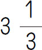
．【解析】 几个不同形式的数比较大小，一般情况下，都可化为小数进行比较．
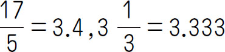
…因为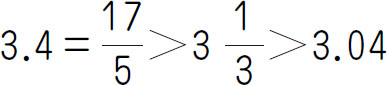
，所以第二小的数是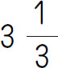
．举一反三2： 2008．
【解析】 把除法变为乘法，然后运用乘法分配律简算，最后加上1．
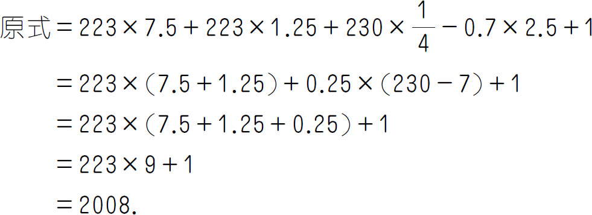
举一反三3： 15572．
【解析】 设S ＝1×4＋4×7＋7×10＋…＋49×52，则可知9S ＝49×52×55＋1×4×2．
举一反三4： 96．
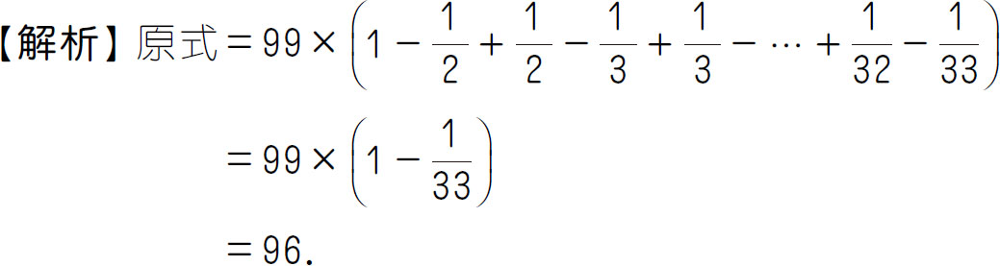
大显身手：
1．4209.376．【解析】 凑整．
原式＝10＋30＋170＋4000－（0.004＋0.02＋0.1＋0.5）
＝4210－0.624
＝4209.376．
2．100．【解析】 原式＝99×0.99＋0.99＋1＝（99＋1）×0.99＋1＝100．
3．243.7．【解析】 原式＝2.437×36.54＋2.437×63.46＝2.437×（36.54＋63.46）＝243.7．
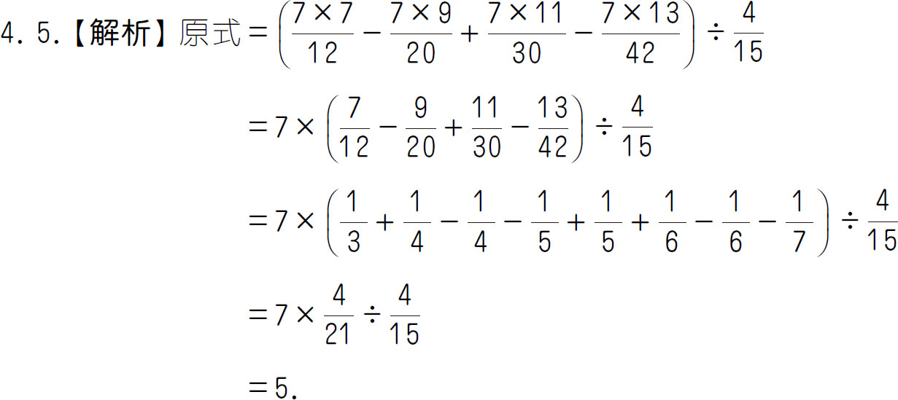
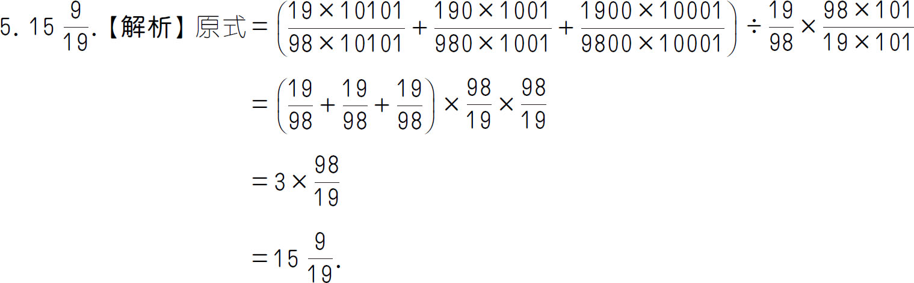
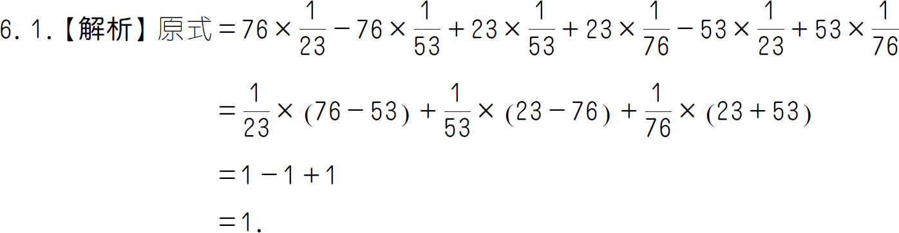
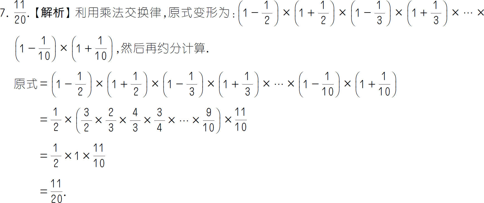
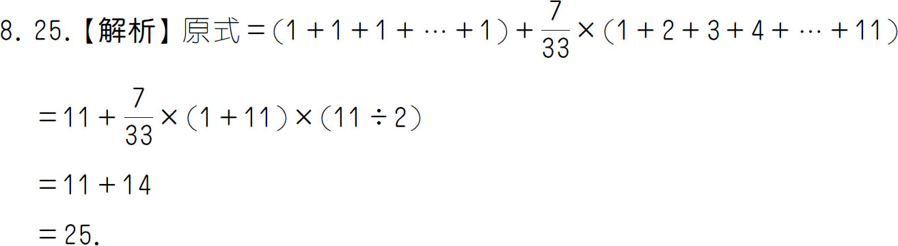
举一反三1： 257．
【解析】 因为三位数N 各位数字不同且都为质数，10以内的质数有2、3、5、7，由这4个质数组合得到的最小的数为257．
举一反三2： 12．
【解析】 首先这个数的因数只能是2和3．设A ＝2 a ×3 b ，则A 的因数个数为（a ＋1）×（b ＋1）．根据题意，2倍后变为2A ＝2 a ＋1 ×3 b ，则（a ＋1＋1）×（b ＋1）比（a ＋1）×（b ＋1）多2个，说明b ＋1＝2，b ＝1，同理可得a ＝2．
举一反三3： 72．
【解析】 设这9个连续自然数的第一个自然数为x ，则接下来的8个数为x ＋1，x ＋2，…，x ＋8．根据题意，3x ＝x ＋8．解得x ＝4，则这9个数的和是4＋5＋…＋12＝72．
举一反三4： 162，238．
【解析】 设这两个数为9x （9的倍数）和17y （17的倍数），x 、y 为正整数．则有9x ＋17y ＝400，解得x ＝1，y ＝23，或x ＝18，y ＝14，或x ＝35，y ＝5．其中只有x ＝18，y ＝14满足这两个数是三位数．故这两个三位数是9×18＝162，17×14＝238．
大显身手：
1．D．【解析】 2005是5的倍数，所以2005是合数；2007是3的倍数，所以2007是合数；2009是7的倍数，所以2009是合数；2011只有1和它本身两个因数，所以2011是质数；2013是3的倍数，所以2013是合数．所以2011年是质数年．
2．240．【解析】 先将20写成几个数相乘的形式，再写成几个和的积的形式，最后利用因数个数的公式解答即可．①20＝20×1＝19＋1，N 的最小值为219 ＝524288；②20＝10×2＝（9＋1）×（1＋1），N 的最小值为29 ×3＝1536；③20＝5×4＝（4＋1）×（3＋1），N 的最小值为24 ×33 ＝432；④20＝5×2×2＝（4＋1）×（1＋1）×（1＋1），N 的最小值为24 ×31 ×51 ＝240．
3．3．【解析】 因为A 是质数，所以只能是2、3、5、7，但是12、15、27都不是质数，所以A ＝3．
4．3，3，5，8．【解析】 根据这四个数中只有一个是合数，可知其他三个数是质数，将360分解质因数得360＝2×2×2×5×3×3．所以这四个数是3、3、5和8．
5．1340．【解析】 因为1＋2＝3，所以这个数是2的倍数，这个数本身与第二大因数之和是2010，由于除了1之外，最小因数是2，所以第二大因数必定是最大因数的
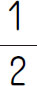
．设这个数的最大因数是x ，则第二大因数就是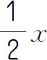
，根据和是2010，可得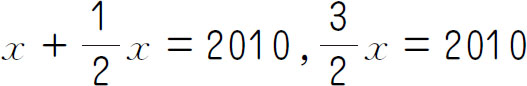
，x ＝1340．6．165、660、57065085．【解析】 ①由于a ＋b ＋c ＝1155，而1155＝3×5×7×11．令a ＝mp ，b ＝mq ，c ＝ms ．则1155＝mp＋mq＋ms＝m（p＋q＋s）．m 为a ，b ，c 的最大公因数，则p＋q＋s 最小取7.1155＝3×5×7×11＝3×5×（1＋2＋4）×11，即此时m ＝3×5×11＝165．②为了使最小公倍数尽量小，应使三个数的最大公因数m 尽量大，并且使a ，b ，c 的最小公倍数尽量小，所以应使m ＝165，此时三个数分别为1×165＝165，165×2＝330，165×4＝660．它们的最小公倍数为660，所以最小公倍数的最小值为660．③为了使最小公倍数尽量大，应使三个数两两互质且乘积尽量大．当三个数的和一定时，为了使它们的乘积尽量大，应使它们尽量接近．由于相邻的自然数是互质的，所以可以令1155＝384＋385＋386，但是在这种情况下384和386有公因数2，而当1155＝383＋385＋387时，三个数两两互质，它们的最小公倍数为383×385×387＝57065085，即最小公倍数的最大值为57065085．
7．10．【解析】 从1到30的15个奇数不用删，其中1，3，5，7，9，11，13，15的两倍数2，6，10，14，18，22，26，30删掉，剩下的4，12，20，28不删，8，24删掉．共删掉10个数．
8．第一组：7、28和30；第二组：14、21和20．【解析】 先把14，20，21，28，30分解质因数，看这6个数中共有哪几个质因数，再分摊在两组中，使两组数乘积相等．7＝1×7，14＝2×7，20＝2×2×5，21＝3×7，28＝2×2×7，30＝2×3×5．从上面6个数分解质因数来看，共有质因数4个7，6个2，2个3，2个5，因此每组数中一定要含3个2，1个3，1个5，2个7．6个数可分成如下两组（分法是唯一的）：第一组是7、28和30，第二组是14、21和20，且7×28×30＝14×21×20＝5880，满足要求．
9．1959．【解析】 100以内所有奇数之和是1＋3＋5＋…＋99＝100×25＝2500，7的倍数与11的倍数之和是7×（1＋3＋…＋13）＋11×（1＋3＋…＋9）＝7×49＋11×25＝343＋275＝618，7×11＝77，2500-618＋77＝1959．
10．6431205．【解析】 要是55的倍数，则一定能被5和11整除，即末位一定是0或5，下面分情况讨论．①当末位为0时，由可被11整除的数的规律可知，奇位、偶位上的数字和的差为0或为11的倍数，该数能被11整除，因为4＋5＋6-1-2-3＝9＜11，所以只考虑数字差为0的情况，1＋2＋3＋4＋5＋6＝21，没有可能令两组数的数字差为0，所以末位为0时，没有55的倍数；②当末位为5时，同样，1＋2＋3＋4＋5＋6＝21，没有可能令两组数的数字差为0，所以仅考虑数字差为11的情况，而6＋3＋2＋5-4-1-0＝11，所以6、3、2、5一组，0、1、4一组，故最大数为6431205．
11．60，72，84，90和96．【解析】 ①如果恰有一个质因数，那么因数最多的是26 ＝64，6＋1＝7（个），64有7个因数；②如果恰有两个不同质因数，那么因数最多的是23 ×32 ＝72和25 ×3＝96，（3＋1）×（2＋1）＝12，（5＋1）×（1＋1）＝12，72和96各有12个因数；③如果恰有三个不同质因数，那么因数最多的是22 ×3×5＝60，22 ×3×7＝84和2×32 ×5＝90，它们的因数个数都是（2＋1）×（1＋1）×（1＋1）＝12，所以60、84、90各有12个因数．所以100以内因数最多的自然数是60，72，84，90和96，都有12个因数．
12．爷爷今年77岁，孙子今年9岁；或者爷爷今年63岁，孙子今年11岁．【解析】 693＝3×3×7×11．把693分解成两个大于4的因数的乘积693＝99×7＝77×9＝63×11＝33×21，相乘的两个因数减4都是质数的有77×9和63×11和33×21，但爷孙的年龄不可能是33岁和21岁，所以是77岁和9岁或63岁和11岁．
举一反三1： 90．
【解析】 因为105＝3×5×7，根据数的整除性质，可知这个六位数能同时被3、5和7整除．根据能被5整除的数的特征，可知这个六位数的个位数只能是0或5，再根据能被3整除的数的特征，可知这个六位数有如下七个可能：199200、199230、199260、199290、199215、199245、199275．最后用7去试除可知，199290能被7整除．所以，199290能被105整除，它的最后两位数是90．
举一反三2： 43．
【解析】 根据题意，（63＋91＋129）除以这个数的余数是25，即63＋91＋129-25＝258能够被这个数整除．258＝2×3×43，那么这个数可能是2、3、43、6、86、129；又因为这个数应小于63，大于25，所以这个数只能是43．
举一反三3： 1．
【解析】 5的余数特征是个位数字除以5余几，这个数除以5就余几.如20140316＝20140310＋6，显然20140310是5的倍数，只需要判断个位数字6即可，6÷5＝1……1，余数是1，所以20140316÷5的余数是1．
举一反三4： 347．
【解析】 根据其最大三位数尽可能小的条件，它们百位上的数字应分别选用3、2、1，个位上的数字应分别选用7、8、9．又根据最小的三位数是3的倍数，考虑在1_9中应填5，得159．则在3_7，2_8中被3除余2，余1，选用4、6，分别填入下划线中得347，268均符合条件．这样，最大三位数是347，次大三位数是268，最小三位数是159．
大显身手：
1．20或80．【解析】 由于满足能被2、3、4整除的数比较多，所以先来看满足可以被5整除的数的特点，即个位数是0或5．但若在个位填5，则不满足可以被2整除的条件，所以个位数字一定是0．若这个四位数可以被4整除，则□0是4的整数倍，满足条件的有00、20、40、60、80，在1600、1620、1640、1660、1680这些数中易知1620与1680可以被3整除．因此，这个四位数的末两位上是20或80．
2．3．【解析】 首项是105，第2013项是105＋（2013-1）×35＝35×2015，前2013项的和为（105＋35×2015）×2013÷2＝35×1009×2013，35×1009×2013除以12的余数恒等于11×1×9除以12的余数，而11×1×9除以12的余数为3，所以这2013个数的和被12除的余数是3．
3．5或14．【解析】 （191919＋n ）（191919＋n ）＝191919×191919＋2×191919×n ＋n 2 ，191919×191919能被19整除，2×191919n 也能被19整除，所以n 2 等于19的倍数加6，此时52 ，142 满足本条件，故n ＝5或14．
4．丁．【解析】 如下表所示，每6个数号为一组，形成了报数的规律．1990除以6的余数是4，根据余数是4可知报1990的小朋友是丁．
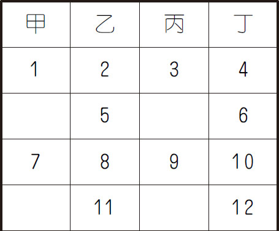
5．10．【解析】 666666÷26＝25641，即26能整除666666，即每6个6为一个周期，因为2002÷6＝333……4，由6666÷26＝256……10，所以由2002个6组成的2002位数
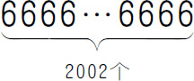
个被26除所得余数为10．6．2．【解析】 设第1个数为a ，第二个数为b ，则有
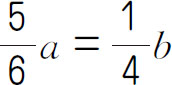
，10a ＝3b ，a 和b 是自然数，而且互质，所以求得a ＝3，b ＝10．这串数列就是3，10，13，23，36，59，95，154，249……它们除以3后的余数是按照“0，1，1，2，0，2，2，1”8个数一组进行循环的，1999÷8＝249……7，余数是7，那么第1999个数除以3后的余数，与第7个数除以3后的数相同，都是2．7．80000001．【解析】 要符合能被27整除而不能被81整除的条件，也就是这个数先能被9整除，然后得到的商只能被（27÷9＝）3整除而不能被（81÷9＝）9整除就符合条件．
8001÷9＝889，8＋8＋9＝25，2＋5＝7，（不能被3整除）
80001÷9＝8889，8＋8＋8＋9＝33，3＋3＝6，（能被3整除，不能被9整除）
800001÷9＝88889，8＋8＋8＋8＋9＝41，4＋1＝5，（不能被3整除）
8000001÷9＝888889，8＋8＋8＋8＋8＋9＝49，4＋9＝13，（不能被3整除）
80000001÷9＝8888889，8＋8＋8＋8＋8＋8＋9＝57，5＋7＝12，（能被3整除，不能被9整除）故这些数中第二个是80000001．
8．65．【解析】 18769＝137×137，
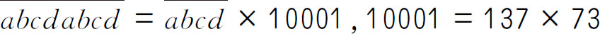
，由此可知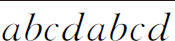
能被10001整除，也就是能被137整除，所以只要满足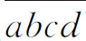
能被137整除即可．137×7＝959，137×8＝1096，137×72＝9864，137×73＝10001，所以共有72-8＋1＝65（个）满足要求的数．
举一反三1： 7．
【解析】 由a △b ＝（a ＋1）÷b 得，3△4＝（3＋1）÷4＝4÷4＝1；6△（3△4）＝6△1＝（6＋1）÷1＝7．
举一反三2：
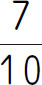
．【解析】
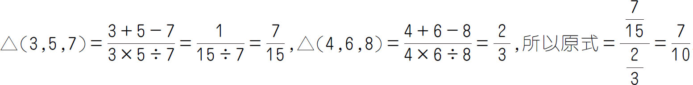
．举一反三3： 98．
【解析】 原式＝4※［（6＋8-1）#（3×5-2）］＝4※［13#13］＝4※［13＋13-1］＝4※25＝4×25-2＝98．
举一反三4： 32．
【解析】 256÷a ×2＋3＝19，256÷a ×2＝16，256÷a ＝8，a ＝32．
大显身手：
1．0.55．【解析】 原式＝（11÷5）÷（（11÷5）＋1.8）＝2.2÷4＝0.55．
2．312．【解析】 5*7＝（5＋3×7）×（5＋7）＝（5＋21）×12＝26×12＝312．
3．111105．【解析】 根据新定义，9×5＝9＋99＋999＋9999＋99999＝（10-1）＋（100-1）＋（1000-1）＋（10000-1）＋（100000-1）＝111110-5＝111105．
4．105．【解析】 x ※5＝x ×5＋x ，5※x ＝5×x ＋5，x ※5-5※x ＝x -5，x -5＝100，x ＝105．
5．19，41．【解析】 （1）（7※8）※6＝（7＋8－1）※6＝14※6＝14＋6－1＝19．（2）先对（5※x ）※x 逐步展开，5※x ＝5＋x －1＝4＋x ，把“4＋x ”看成一个整体，作为新运算定义中的“a ”，则（5※x ）※x ＝（4＋x ）※x ＝（4＋x ）＋x －1＝3＋2x ，因为（5※x ）※x ＝85，即3＋2x ＝85，可以求出x 的值为（85-3）÷2＝41．
6．81，15．【解析】 （1）12☆21＝［12，21］-（12，21）＝84-3＝81．（2）因为定义的新运算“☆”没有四则运算表达式，所以不能直接把数代入表达式求x ，只能用推理的方法．因为6☆x ＝［6，x ］-（6，x ）＝27，而6与x 的最大公约数（6，x ）只能是1，2，3，6．所以6与x 的最小公倍数［6，x ］只能是28，29，30，33．这四个数中只有30是6的倍数，所以6与x 的最小公倍数和最大公约数分别是30和3．因为a ×b ＝［a ，b ］×（a ，b ），所以6×x ＝30×3，由此求得x ＝15．
举一反三1： 114．
【解析】 （80＋2＋4）×8-（80＋2）×7＝114．
举一反三2： 94．
【解析】 （98×2＋93×2＋91×2）÷2÷3＝94（分）．
举一反三3： 154．
【解析】 设男生人数为x ，那么全班同学的平均身高为（150×2x ＋162×x ）÷3x ＝462÷3＝154（厘米）．
举一反三4： 81．
【解析】 第六次至第九次共得（428÷5＋1.4）×4＝348（分），如果第十次考428-348＝80（分），那么前五次与后五次的总分相同，因此后五次的平均分与十次的平均分相同．现在要使后五次的平均分高于十次的平均分，第十次至少要考81分．
大显身手：
1．764．【解析】 除了108之外还有（108-100）÷（100-99）＝8（个）数，一共9个数，最大的数是9×100-108-1-2-3-4-5-6-7＝764．
2．24人．【解析】 女生每人比全班平均分高92-91.2＝0.8（分），而男生每人比全班平均分低91.2-90.5＝0.7（分）．全体女生高出全班平均分0.8×21＝16.8（分），应补给每个男生0.7分，16.8里包含有24个0.7，即全班有男生24人．
3．92分．【解析】 82×6-80×5＝92（分）．
4．84下．【解析】 设两组同学平均跳了x 下.第一组有25人，平均跳了80下，所以第一组总共跳了25×80＝2000（下）．第二组有20人，平均跳了（x ＋5）下，总共跳了（x ＋5）×20下．根据关系式：
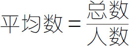
，列方程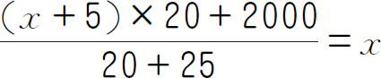
，解得x ＝84．5．3.75千米/小时．【解析】 设总路程为（S＋S ）千米，总时间为
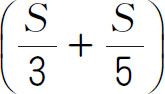
小时，则往返的平均速度为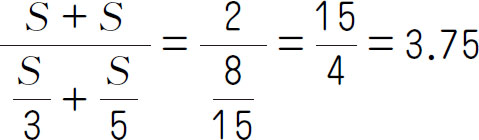
（千米/小时）．6．24千米/时.【解析】 此题需要注意，求平均速度一定要用总路程除以总时间．来往总路程为120＋120＝240（千米），总时间为120÷30＋120÷20＝4＋6＝10（小时），所以平均速度是240÷10＝24（千米/时）．
7．29．【解析】 总数为24.5×4＝98，设第一个数为x ，则第二个数为x ＋3，第三个数为x ＋3＋3＝x ＋6，第四个数为x ＋3＋3＋3＝x ＋9，第一个数＋第二个数＋第三个数＋第四个数＝总数，解得x ＝20，则最大的一个数为20＋9＝29．
举一反三1： 5．
【解析】 最坏的情况是每种球都摸出1个，那么摸了4个后，再摸1个，就能得到2个颜色相同的球，所以至少需要摸1×4＋1＝5（个）．
举一反三2： 5．
【解析】 一年共有12个月，将这12个月当作12个“抽屉”，52÷12＝4……4，即平均每月4名同学过生日的话，还余4名同学，所以总有一个月最少有4＋1＝5（名）同学都在这个月出生．
举一反三3： 不能．
【解析】 8行、8列加上2条对角线，和共有18种情况，如果互不相等，就有18个不同的值，而填入的最小和为8个1，是8，最大为8个3，是24，8到24有17个不同的数，因此不能做到．
举一反三4： 55个．
【解析】 把箱子分成3组，每组4个，共12个，另外还剩下1个单独的箱子，每组4个箱子里分别放入1、3、5、7个苹果，为使苹果数最多，则第13个箱子里也放入7个苹果，所以共有（1＋3＋5＋7）×3＋7＝55（个）苹果．
大显身手：
1．13．【解析】 考虑最不利原则，每次拿出的都是1只脏袜子和1只干净的袜子，所以在第12次之后，脏袜子全部扔掉，只剩下干净袜子，再拿一次，刚好拿出两只干净的袜子，即至少拿12＋1＝13（次）．
2．1006．【解析】 任意两个末位数是1、2、3、4、5（或6、7、8、9、0）的数的差不为5，1～2005中共有1005个这样的数，最差情况是取出的1005个数中全是末位是1、2、3、4、5（或6、7、8、9、0）的数，此时只要再任意取出一张，这1006张卡片中肯定至少有一张与这张的标号的差为5．
3．25．【解析】 买5件共有1种选择：3×5＝15；买4件共有2种选择：3×4＝12，3×3＋5＝14；买3件共有4种选择：5×3＝15，5×2＋3＝13，5×1＋3×2＝11，3×3＝9；买2件共有3种选择：5＋3＝8，5×2＝10，3×2＝6；买1件共有2种选择：3×1＝3，5×1＝5．所以总的购买选择有1＋2＋4＋3＋2＝12（种）．根据抽屉原理，这群小朋友最少要有12×（3-1）＋1＝25（人）．
4．11．【解析】 在“田”字格中，最大的为9＋9＋9＋9＝36，最小的为1＋1＋1＋1＝4．故四数之和有36-4＋1＝33（种），而在20×20的网格中，应有19×19＝361（个）不同的“田”字形．故由抽屉原理得，361÷33＝10……31，10＋1＝11（个）．
5．3．【解析】 既然是将矩形分成梯形，那就是在长或宽上分，且10条直线中的每一条都将矩形分成两个面积比是1∶2的梯形，所以长和宽上可分别有对称的两个点，共有4个点，将这四个点当成4个抽屉，将这10条直线放入10个抽屉，根据抽屉原理可知，共有10÷4＝2……2，即共有2＋1＝3（条）直线．
6．16．【解析】 借1本的有4种选择，借2本的有6种选择，借3本的有4种选择，借4本的有1种选择，共有4＋6＋4＋1＝15（种）选择．从最不利的情况考虑，每种情况都有一个人选择，共需要15人，如果再有一个人去借书，他总会和前面的15个人中的某个人是相同的，故需要去16人才能保证一定有两人借的书是一样的．
7．11．【解析】 所有的真分数可分成10个区间（0～0.1，0.1～0.2，0.2～0.3，0.3～0.4，0.4～0.5，0.5～0.6，0.6～0.7，0.7～0.8，0.8～0.9，0.9～1），把这10个区间看作10个“抽屉”，若每个“抽屉”都有1个真分数，则再取出1个真分数即可保证必有两个真分数的差小于
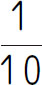
．8．43人．【解析】 从4名候选人中选出2名班长，共有3＋2＋1＝6（种）选法，要保证必定有8个或8个以上的同学投相同的票，至少需6×7＋1＝43（个）同学投票．
举一反三1： 832千米．
【解析】 甲、乙所行的路程比＝甲乙的速度比＝56∶48＝7∶6，则东西两地相距（32＋32）÷（7-6）×（7＋6）＝832（千米）．
举一反三2： 50米．
【解析】 设小红每分钟走x 米，则小平每分钟走x ＋20米．列方程x ＋20×30-350＝x ×
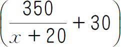
，可得x ＝50．举一反三3： 2160米．
【解析】 相遇时，小玲比小平多行120×2＝240（米），小玲与小平的速度差为100-80＝20（米/分钟）．相遇用时为240÷20＝12（分钟），学校到少年宫的距离为（100＋80）×12＝2160（米）．
举一反三4： 6.8千米．
【解析】 由“乙在离B 地3.2千米处与甲相遇”，可知相遇时甲比乙多行了3.2＋3.2＝6.4（千米），甲每分钟比乙多走250-90＝160（米），多行6.4千米需要的时间为6.4×1000÷160＝40（分钟）．所以A 、B 两地的距离为40×250-3200＝40×90＋3200＝6800（米）．
大显身手：
1．10点．【解析】 由题意得，两人的速度差是每小时36千米，且下午2点时小李追上小王；两人的路程差是（6-2）×36＝144（千米），所以小李的速度为144÷（6-4）＝72（千米/时），小王的速度为72-36＝36（千米/时），全程长72×4＝288（千米），小王共用时288÷36＝8（小时），所以他是上午10点出发的．
2．24分钟．【解析】 把从甲地到乙地的路程看作单位“1”，设他们走了x 分钟．2小时＝120分钟，1小时＝60分钟，他们的速度分别是
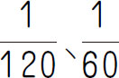
，以小张未走的路程恰好是小李未走的路程的2倍为等量关系，列方程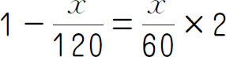
，则x ＝24．3．2小时．【解析】 要求乙几小时可追上甲，先要求出甲比乙多行的路程；然后求出乙每小时比甲多行的距离，再用多行的路程除以速度差，即4×4÷（12-4）＝2（小时）．
4．不会．【解析】 预赛时，小狗跑了100米，小猴跑了90米，所以它们的速度比为100∶90＝10∶9．决赛时，把小狗的起跑线往后挪10米后，小狗要跑110米，当小狗跑到终点时，小猴跑了
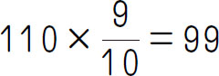
（米），离终点还差1米，所以它还是比小狗晚到终点．5．108千米．【解析】 根据题意，由于路程相同，时间相同，那么不同速度行驶的路程分别也相同．如果小轿车从C 地出发，则把B C 看作3份的路程；如果小轿车从A 地出发，则追上大货车时，它行驶了3份的路程，大货车行了1份的路程，从而得到A 、C 的距离是3-1＝2（份）的路程，即A B 的长度是3＋2＝5（份），然后再进一步解答．即B 、C 间的路程是180÷5×3＝108（千米）．
6．（1）72千米．（2）24千米/时．（3）39千米/时．【解析】 （1）甲车与卡车相遇时行驶了6小时，由于甲、乙两车的速度差为60-48＝12（千米/时），则此时甲、乙两车相距12×6＝72（千米）．（2）由于卡车与甲车相遇时甲、乙两车相距72千米，即此时卡车与乙车相距也是72千米，由于卡车又经过了7-6＝1（小时）与乙车相遇，则卡车的速度为72÷1-48＝24千米/时．（3）由于卡车与乙车相遇时，三车已行驶了7小时，此时乙车已行驶48×7＝336（千米），又过了8-7＝1（小时），卡车与丙车相遇，从与乙车相遇到与丙车相遇，卡车行驶了24千米，即丙车在8小时内行驶了336-24＝312（千米），则丙车的速度为312÷8＝39千米/时．
7．（1）110千米或者90千米；（2）60千米/时或者40千米/时．【解析】 第一次相遇时，甲车行驶了50千米，第二次相遇时两车共行驶了三个全程，所以第二次相遇时甲车行驶了50×3＝150（千米）．第二次相遇点与第一次相遇点的距离是20千米．此时有两种情况，第一种是第二次相遇地点距A 地为50＋20＝70（千米），即甲车再行驶70千米就行驶了两个全程，所以A 、B 两地相距（150＋70）÷2＝110（千米），然后再根据第一次的相遇时间求出乙的车速度60千米/时．同理完成第二种第二次相遇时距离A 地50-20＝30千米时的情况．
8．21，29．【解析】 分情况讨论：①第一次乙与丙的距离是甲与丙距离的2倍时，乙已经与丙相遇，而甲还没有与丙相遇，设x 分钟后丙与乙的距离是丙与甲的距离的2倍．丙与乙合走的路程就是（6＋5）x 米，他们之间的距离就是（6＋5）x -203米；甲与丙合走的路程就是（4＋5）x 米，他们之间的距离就是203-（4＋5）x 米，由乙与丙的距离是甲与丙的2倍这一等量关系可得（6＋5）x -203＝2×［203-（4＋5）x ］，解得x ＝21．②设第二次乙与丙的距离是甲与丙距离的2倍时，甲和乙都已经与丙相遇，设y 分钟后乙与丙的距离是甲与丙距离的2倍．丙与乙合走的路程就是（6＋5）y 米，他们之间的距离就是（6＋5）y -203米；与丙合走的路程就是（4＋5）y 米，他们之间的距离就是（4＋5）y -203米，由乙与丙的距离是甲与丙的2倍这一等量关系可得（6＋5）y -203＝2×［（4＋5）y -203］，解得y ＝29．
举一反三1： 在静水中的速度是4千米/时，水速为2千米/时．
【解析】 顺水速度为（42＋8×3）÷11＝6（千米），逆水速度为8÷（11-42÷6）＝2（千米），船速为（6＋2）÷2＝4（千米），水速为（6-2）÷2＝2（千米）．
举一反三2： 3.2．
【解析】 设轮船在静水中的速度为x 千米/时，水流速度为y 千米/时，依题意得
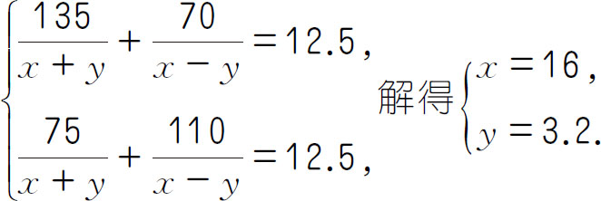
所以水流速度为3.2千米/时．
举一反三3： 160秒．
【解析】 列车速度为（750-210）÷（50-23）＝540÷27＝20（米/秒），列车车身长为20×50-750＝1000-750＝250（米），列车与货车从相遇到离开需（250＋230）÷（20-17）＝480÷3＝160（秒）．
举一反三4 ：21.6千米/时．
【解析】 由题意可知，AD ＝DB ＝54÷2＝27（千米），5400米＝5.4千米，AE ＝27＋5.4＝32.4（千米），BE ＝27-5.4＝21.6（千米）．设甲的速度为x 千米/时，由于
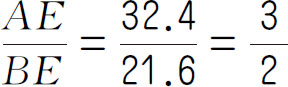
，又因为三人在距离D 点5400米的E 点相遇，所以甲的速度是乙的速度的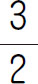
倍，所以乙的速度是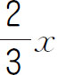
千米/时．若乙提高速度到原来的3倍，设相遇点是F ，则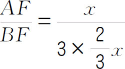
＝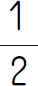
，所以AF ＝54÷（1＋2）＝18（千米）．因为丙必须提前52分钟出发三人才能相遇，否则甲、乙相遇的时候，丙还差6600米即6.6千米才到D 点，则6.6＋DF ＝6.6＋（27－18）＝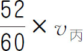
，由此可知，丙的速度是18千米/时，又因为甲和丙能在E 点相遇，所以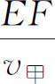
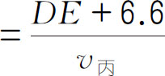
，据此求出v 甲 即可．大显身手：
1．140千米．【解析】 （28-4×2）×2÷（4×2）×28＝140（千米）．
2．11米/秒．【解析】 车比人多行驶的路程是车长90米，追及时间是10秒，所以速度差是90÷10＝9（米/秒），因此车速是2＋9＝11（米/秒）．
3．3∶1．【解析】 因为两次航行的时间相等，所以顺流（21－12＝）9千米的时间等于逆流（7－4＝）3千米的时间，所以顺流与逆流的速度比为9∶3＝3∶1．
4．140千米．【解析】 设两站相距S 千米，第一次在离东站60千米的地方相遇，则两车总行程为两站距离S ，从东到西的汽车行程为60千米．第二次距中点西侧30千米处相遇，相遇时两车总行程为3S ，原从东到西的汽车行程为（1.5S -30）千米，从而得出第二次相遇原从东到西的汽车行程是第一次相遇行程的3倍．列式1.5×S -30＝60×3，解得S ＝140．
5．25米/秒；125米．【解析】 从车头上桥到车头离桥所用时间是26-5＝21（秒），要求火车过桥时的速度，列式525÷21＝25（米/秒）；火车在26秒内所行的路程，是525米加上一个车身长，这是因为火车通过桥，是从车头上桥算起到车尾离开桥，共行驶了25×26＝650（米），减去桥长，就是车身的长度650-525＝125（米）．
6．52.2秒．【解析】 这列火车从车头遇到前面的车到完全超过前面的车，这段时间内两列火车的路程差就是135＋126＝261（米），即后面的火车比前面的火车多行驶了261米．假设用了t 秒，则17t -12t ＝135＋126，化简5t ＝261，解得t ＝52.2秒．
7．286米．【解析】 车身长÷经过人的时间＋人的速度＝车身长÷经过骑车人的时间＋骑车人的速度，把相关数值代入即可求解．
8．680千米．【解析】 可设A与B相遇所用的时间为未知数，等量关系为：A与B相遇时A走的路程＋A与B相遇时B走的路程＝A与C相遇时A走的路程＋A与C相遇时C走的路程，把相关数值代入即可求得A与B相遇所用的时间，代入等号左边的式子可得甲、乙两站的路程．
举一反三1： 7点
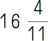
分和8点整．【解析】
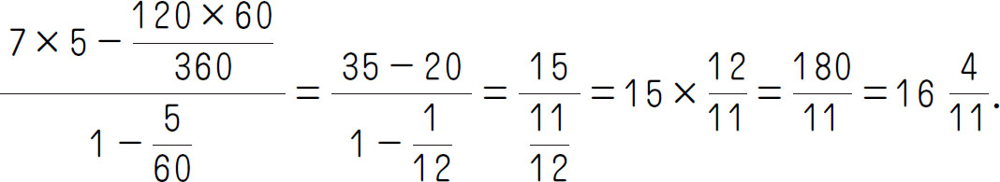
举一反三2：
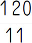
分钟．【解析】 11点整时，时针和分针之间是30°，互相垂直是90°，需要经过90°-30°＝60°，因为时针每小时走过30°，分针每小时走过360°．所以第一次垂直在60÷（360-30）＝
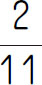
（小时）＝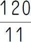
（分钟）．举一反三3： 9．
【解析】 6分钟对应8格，昨晚十点到今早十点是12小时，有12×60＝720（分钟），有120个6分钟，也即120个8格．120×8＝960，960÷20＝48，所以一共转了48圈．所以昨晚十点和今早十点指针一样，都是9．
举一反三4： 12点
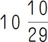
分．【解析】 从单位时间误差开始考虑．由题可知，挂钟走58分钟，实际标准钟已走了60分钟，挂钟走1分钟，标准钟就走了
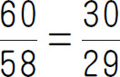
（分钟），即挂钟每走1分钟，会比标准钟慢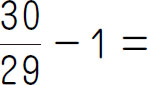
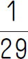
（分钟）．挂钟从早上7点到12点，共走了300分钟，这样总的比标准钟慢了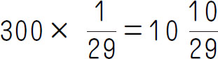
（分钟）．所以，当挂钟指向12点时，标准钟应该是12点 分．大显身手：
1．11时 分．【解析】 可设所求的时刻为11时x 分，于是得到方程 ，解得 ，故所求时刻为11时 分．
2． 分钟．【解析】 从时针、分针的初始位置4点整开始考虑．4点整时，分针在时针后面20格，这是追及路程，速度差＝ ，追及时间＝ ．
3． ．【解析】 在5时与6时之间，时针与分针有两次出现相互垂直．①两针重合前成直角．5点整时，分针与时针的夹角是6°×25格＝150°，成直角时的夹角是90°．追及时间＝（150°-90°）÷（6°-0.5°）＝ （分钟）．②两针重合后成直角．追及时间＝（150°＋90°）÷（6°-0.5°）＝ （分钟）．
4．160°．【解析】 2点整时，两针夹角是60°，40分钟后，分针转动了40×6°＝240°，时针转动了40×0.5°＝20°，所以2点40分时，两针的夹角＝240°-60°-20°＝160°．
5． 分钟．【解析】 先求出开始的时刻和结束的时刻，再求出播出时间．但在这里，我们可以简化一下．因为开始时两针成180°，结束时两针重合，分针比时针多转半圈，即多走30格，所以播出时间为 （分钟）．
6． 分．【解析】 此时分针与时针离“4”的距离相等，即时针从正好指向“4”开始转动，顺时针转到现在时针位置所走的路程，和逆时针转动到现在分针所在位置所走的路程是相等的．现将原来分针和时针做顺时针方向运动，转化成分针做顺时间方向转动，而时针做逆时针方向运动，在现在分针的位置两针重合．由路程和＝5×4＝20格，速度和＝1＋ ，得到相遇时间 （分）．
举一反三1： 15个小朋友，69个梨子．
【解析】 比较两次分梨的情况，结果相差9＋6＝15（个），即每人分4个比每人分5个多余15个梨．为什么会余下15个梨呢？因为每人少分了5－4＝1（个）梨，所以15÷1＝15（人）就是小朋友的人数．15×4＋9＝69（个）就是梨的个数．
举一反三2： 三好学生有19人，铅笔有126支．
【解析】 （45-7）÷（9-7）＝19（人），7×19-7＝126（支）．
举一反三3： 12块．
【解析】 两次分配的结果相差24-12＝12（块），这是因为两次分配中每人相差9-6＝3（块），多少人相差12块呢？12÷3＝4（人），糖果数是6×4-12＝12（块），或9×4-24＝12（块）．
举一反三4： 有13个小朋友，86个苹果．
【解析】 因为橘子每人分3个多4个，而苹果是橘子的2倍，因此苹果每人分6个就多8个．又已知苹果每人分7个少5个，所以应有（8＋5）÷（6-5）＝13（人）．那么苹果数量就好求了，根据“苹果每人分7个，少5个”即可求出共有小朋友（4×2＋5）÷（3×2-5）＝13（人）．苹果个数为13×7-5＝86（个）．
大显身手：
1．23人，100本．【解析】 学生与笔记本的总数不变，每人分3本，剩下31本，每人分5本，差15本．可以看出如果在每人发3本的基础上每人再发2本，就需要31＋15＝46（本）．因此，46÷2＝23（人）就是五年级（2）班的学生人数，则笔记本有23×3＋31＝100（本）．
2．12人．【解析】 由“少一个女生，增加一个男生，则男生为总人数的一半”可知，女生比男生多2人；“少一个男生，增加一个女生”后，女生就比男生多2＋2＝4（人），这时男生为女生人数的一半，即现在女生有4×2＝8（人）．原来女生有8－1＝7（人），男生有7－2＝5（人），共有7＋5＝12（人）．
3．120吨．【解析】 80－25＝55（吨），［55÷（3－1）＋5］×2＋55＝120（吨）．
4．猪肉每斤8元，妈妈带了45元．【解析】 妈妈买5斤多5元，买6斤差3元，一次多余，一次不够，两次一共相差5＋3＝8（元）．多买6-5＝1（斤），多出8元，因此一斤猪肉要8元．猪肉价格为（5＋3）÷（6-5）＝8（元），妈妈带了5×8＋5＝45（元）或8×6-3＝45（元）．
5．70个．【解析】 如果大班减少3人，则大班和小班的人数同样多．这样，大班每人5个就多余3×5＋10＝25（个）．由于两班人数相等，小班每人多分3个就要多分25＋2＝27（个）苹果，小班同学的人数是（25＋2）÷（8－5）＝9（个），这筐苹果的个数是9×8－2＝70（个）．
6．7个，38个．【解析】 我们可以把“其中2个人打4个桩，其余的人各打6个桩，正好打完”改成“每人打6个桩，则有4个桩没人打”，那么工地上的人数是（3＋4）÷（6-5）＝7（个），共需要打桩5×7＋3＝38（个）．
举一反三1： 385．
【解析】
最小的一个约数是1，所以第二小的约数是5．最大的约数是它本身，所以第二大的约数是它的
，差是原数的
，所以原数等于
．
举一反三2： 20个．
【解析】 设原来有梨x 个，那么有苹果2x 个，由题可知苹果的原来的数量再加上20个，那么每天吃6个可以和梨一起正好吃完，所以根据吃的时间是相同的，列出方程 ，解得x ＝20．
举一反三3： 16块．
【解析】 设弟弟最初准备挑x 块，那么哥哥准备挑26-x 块．第一次哥哥从弟弟那里拿过一半，那么弟弟挑 块，哥哥挑 块；第二次弟弟从哥哥那里拿回一半，那么弟弟挑 块，哥哥挑 块；第三次弟弟给哥哥5块，那么弟弟有 块，哥哥挑 块；最后，哥哥比弟弟多挑2块，即 ，解得x ＝16．
举一反三4： 54米．
【解析】 由还原法知，第二次用完还剩下15＋7＝22（米），第一次用完还剩下（22-10）×2＝24（米），原来电线长（24＋3）×2＝54（米）．
大显身手：
1．169．【解析】 利用还原法．因为把个位上的5看成9，所以多加了4；又因为把十位上的8看成3，所以少加了50．在用还原法做题时，多加了的4应减去，多减了的50应加上，即123-4＋50＝169．
2．85枚．【解析】 棋子最少的情况是最后一次四等分时每份为1枚．由此逆推，得到第三次分之前有1×4＋1＝5（枚），第二次分之前有5×4＋1＝21（枚），第一次分之前有21×4＋1＝85（枚）．
3．476．【解析】 设原数个位为a ，则十位为a ＋1，百位为16-2a ．根据题意列方程100a ＋10a ＋16-2a －100（16-2a ）-10a -a ＝198，解得a ＝6，则a ＋1＝7，16-2a ＝4．
4．46．【解析】 设该两位数为a ，则该三位数为300＋a ，7a ＋24＝300＋a ，a ＝46．
5．857142．【解析】 设原六位数为 ，则新六位数为 ，再设 （五位数）为x ，则原六位数就是10x ＋2，新六位数就是200000＋x 根据题意列方程（200000＋x ）×3＝10x ＋2，解得x ＝85714，所以原数就是857142．
6．640吨．【解析】 24＋24÷2＋4＝24＋12＋4＝40（吨），40×2×2×2×2＝640（吨）．
7．92袋．【解析】 先看第二天的情况，卖出去了一半少5袋，那剩下了一半多5袋，也就是32袋，那第一天剩下的一半就是32-5＝27（袋），这样的话第二天剩下的就是27×2＝54（袋），同样第一天卖出去一半少8袋，也就剩下一半多8袋．那总共的一半就是54-8＝46（袋），一共就是92袋．列式得［（32-5）×2-8］×2＝92（袋）．
8．96人．【解析】 因为原来两组都减少了 ，所以原来两组人数总数为 （人）．新两组人的总数144-60＝84（人），新二组的人数是84÷（100％＋10％＋100％）＝40（人）．新一组的人数是84-40＝44（人），原一组的人数是 （人）．
举一反三1： X．
【解析】 根据题意和所给出的图可知，Z是三个星球都含有的气体，W是只有天王星含有的气体，Y是只有冥王星含有的气体，X是海王星和天王星含有的气体，而冥王星不含有该气体，而天王星与海王星上的空气中都含有氦气，冥王星上没有，所以，图中字母X表示氮气．
举一反三2： 10个．
【解析】 根据题意画图如下．
方法一：6＋6＋4－（3＋1）－（0＋1）－（1＋1）＋1＝10（人）；
方法二：6＋6＋4－3－1－1×2＝10（人）．
举一反三3： 2人或7人．
【解析】 根据已知条件画出下图．
三圆盖住的总体为49人，假设既参加数学又参加英语的有x 人，既参加语文又参加英语的有y 人，可以列方程30＋20＋10－x －y －3＋1＝49，整理后得x ＋y ＝9．由于x 、y 均为质数，因而这两个质数中必有一个偶质数2，另一个质数为7．
举一反三4： 最多有46人，最少有39人．
【解析】 根据题意画下图分析．
设三科都得满分者为x ，全班人数＝20＋20＋20－7－8－9＋x ＋3，整理后得，全班人数＝39＋x ．39＋x 表示全班人数，当x 取最大值时，全班人数就最多，当x 取最小值时，全班人数就最少．x 是数学、语文、英语三科都得满分的同学，因而x 中的人数一定不超过两科得满分的人数，即x ≤7，x ≤8且x ≤9，由此我们得到x ≤7．另一方面x 最小可能是0，即没有三科都得满分的．当x 取最大值7时，全班有39＋7＝46（人），当x 取最小值0时，全班有39＋0＝39（人）．
大显身手：
1．47名．【解析】 根据题意，这个班的总人数＝语文得100分的人数和数学得100分的人数之和＋两门功课都未得100分的人数．因此只要求出语文得100分的人数和数学得100分的人数之和即可解决问题．10＋12-3＋28＝22-3＋28＝19＋28＝47（名）．
2．5人．【解析】 45－1＝44（人），20＋18＋22－7－6－8＝39（人），所以44－39＝5（人）．
3．16人．【解析】 （人）．
4．最多有41名，最少有38名同学．【解析】 设三年连续被评为三好生的人数为x 人．全班人数＝10×3－5－4－3＋x ＋20，全班人数＝38＋x ，x 最大是3，最小是0，所以这个班最多有38＋3＝41（名）同学，最少有38＋0＝38（名）同学．
5．45名．【解析】 设三者都喜欢的有x 人，该班有M 人，则M ＝32＋27＋22-（12＋14＋10）＋x ＝45＋x ．要使M 最小，则x 最小，x 最小可为0，故M 最小为45．
6．58平方米．【解析】 38＋44－12－8－4＝58（平方米），或20＋14＋12＋8＋4＝58（平方米）．
7．5个．【解析】 设全班只喜欢足球和篮球的有x 个，只喜欢足球和羽毛球的有y 个，只喜欢羽毛球和篮球的有z个，只喜欢足球的有a 个，只喜欢篮球的有b 个，只喜欢羽毛球的有c 个，三项都不喜欢的有n 个，则x ＋y ＋22＋a ＝40，x ＋z ＋22＋b ＝45，y ＋z ＋22＋c ＝48．三项加起来得x ＋y ＋z ＋（x ＋y ＋z ＋22＋a ＋b ＋c ）＝89．因为60人除了22个三项都喜欢剩下38个人，这38个人中有n 个人什么都不喜欢，喜欢足球的有18个，喜欢篮球的有23个，喜欢羽毛球的有26个，所以此时所占的人数最少时，即人数和为x ＋y ＋z 时，n 最大，从而解得n ＝5．
举一反三1： 小时．
【解析】
甲1小时完成整个工程的
，乙1小时完成整个工程的
，交替干活时两个小时完成整个工程的
，甲、乙各干3小时后完成整个工程的
，还剩下
，甲再干1小时完成整个工程的
，还剩下
，乙花 小时即可完成．所以需要
小时来完成整个工程．
小时即可完成．所以需要
小时来完成整个工程．
举一反三2： 35小时．
【解析】 表示甲、乙同时工作的效率， 表示5小时后进水量， 表示还要注入的进水量， 表示还要35小时注满．
举一反三3： 975个．
【解析】 如果甲车间不抽调一部分工人去完成另外的任务，每天能生产零件15÷1×4＝60（个），原计划完成任务所用的时间是（50＋15）×2÷（60-50）＝13（天），这批零件有（60＋15）×13＝975（个）．
举一反三4： 56天．
【解析】 甲、乙合作的效率是 ，设甲的工作效率是m ，则乙的工作效率是 ，由已知可得 ，可得甲的工作效率是 ，乙的工作效率是 ，易得乙还需要工作 （天）．
大显身手：
1．10天．【解析】 由题意得，甲的工作效率为 ，乙的工作效率为 ，甲、乙的合作工作效率为 ，可知甲、乙合作工作效率>甲的工作效率>乙的工作效率．又因为，要求“两队合作的天数尽可能少”，所以应该让做得快的甲多做，16天内实在来不及的才让甲、乙合作完成．只有这样才能“两队合作的天数尽可能少”．设合作时间为x 天，则甲独做的时间为（16-x ）天，根据题意列方程得 ，解得x ＝10，所以甲、乙最短合作10天．
2．20小时．【解析】 由题意知， 表示甲、乙合作1小时的工作量， 表示乙、丙合作1小时的工作量， 表示甲做了2小时、乙做了4小时、丙做了2小时的工作量．根据“甲、丙合做2小时后，余下的乙还需做6小时完成”可知甲做2小时、乙做6小时、丙做2小时一共的工作量为1．所以 表示乙做6-4＝2（小时）的工作量． 表示乙的工作效率． （小时），表示乙单独完成需要20小时．
3．8.5天．【解析】 由题意可知 ×0.5＝1（ 表示甲的工作效率、 表示乙的工作效率，最后结束必须如上所示，否则第二种做法就不比第一种多0.5天）． （因为前面的工作量都相等），得到 ，又因为 ，所以 ，甲等于17÷2＝8.5（天）．
4．300个．【解析】
师傅第一次完成了 ，第二次也是
，两次一共全部完工，那么徒弟第二次后共完成了
，第二次也是
，两次一共全部完工，那么徒弟第二次后共完成了 ，可以推算出第一次完成了
，可以推算出第一次完成了 的一半是
，刚好是120个，故
＝300（个）．
的一半是
，刚好是120个，故
＝300（个）．
5．15棵．【解析】 （棵）．
6．45分钟．【解析】 ，表示乙、丙两管将满池水放完需要的时间． ，表示乙、丙两管将满池水放完后，还多放了6分钟的水，也就是甲管18分钟进的水． ，表示甲管每分钟进水，最后就是 （分钟）．
7．6天．【解析】 由题意可知，乙做3天的工作量等于甲2天的工作量，即甲、乙的工作效率比是3∶2，甲、乙分别做全部的工作时间比是2∶3，时间比的差是1份，实际时间的差是3天，所以3÷（3-2）×2＝6（天），就是甲的时间，也就是规定日期．也可列方程，设规定日期为x 天， ，解得x ＝6．
8．40分钟．【解析】 设停电x 分钟，根据题意列方程 ，解得x ＝40．
9．8.8小时．【解析】 设甲的工作效率为x ，乙的工作效率为y ．列方程组： 解得 ，所以 （小时）．
10．7.3小时．【解析】 甲、乙轮流做一个工程需要9.8小时，甲做了5小时，乙做了4.8小时；乙、甲轮流做一个工程需要9.6小时，甲做了4.6小时，乙做了5小时．设甲每小时做x ，乙每小时做y ．列方程组： 解得 ，所以乙单独做这个工程需要 （小时）．
举一反三1： 140．
【解析】 白帽子的单价是1.5元，红帽子的单价是2.0元，黄帽子的单价是3.0元，且三种颜色的帽子所用的钱是一样的，那么白帽子、红帽子、黄帽子的数量之比，也就是三、四、五年级的人数比是4∶3∶2；用总人数除以2＋3＋4可以求出每一份的人数，即315÷（2＋3＋4）＝35（人），所以三年级的人数为35×4＝140（人）．
举一反三2： 17．
【解析】 假设一名战士一天的吸食量为1，则14名植物战士16天就要吃掉14×16＝224，15名植物战士24天要吃掉15×24＝360，所以每天魔石长136÷（24-16）＝17，因此每天至少派出17÷1＝17（名）战士，才能保证天不会被捅破（此时魔石生长速度和战士吸食速度保持平衡）．
举一反三3： 303元．
【解析】 先买下80瓶矿泉水，有80个空瓶可以换80÷5＝16（瓶）矿泉水，此时又有16个空瓶可以换3瓶矿泉水余1个空瓶．现在一共有80＋16＋3＝99（人）喝到水，剩下4个空瓶．再买1瓶矿泉水，又能凑成5个空瓶换1瓶矿泉水，此时101人都能喝到了．所以最少要付101×3＝303（元）．
举一反三4： 460元．
【解析】 设甲、乙两件商品的成本价分别为x ，y 元．根据题意，可列方程组： ，解得 ．所以成本较高的那件商品的成本是460元．
大显身手：
1．230．【解析】 已知一等奖奖金是二等奖奖金的5倍，一等奖奖金是500元，那么二等奖奖金是500÷5＝100（元）；根据二等奖奖金的总和是三等奖奖金总和的2倍，得三等奖奖金总和为100×5÷2＝250（元），那么三等奖奖金就是250÷25＝10（元），所以该班一共获得奖金100×2＋10×3＝230（元）．
2．甲的重量是11千克，乙的重量是5千克．【解析】 因为33不是5的倍数，也不是8的倍数，所以多付的33元有5元每千克的，也有8元每千克的．33＝5×5＋8，那么甲比乙多的分成2部分，即10千克以上的有1千克，10千克以下的有5千克．所以甲的重量就是10＋1＝11（千克），乙的重量就是10-5＝5（千克）．
3．6元．【解析】 小明、李平、王小华三个人拿同样多的钱应该拿到同样多的本子，但他们每个人比王小华多拿了6本，一共比王小华多拿了12本．其实多拿的这12本是三个人的，每人应该是4本，那么说明小明和李平分别多拿了王小华的2本，2本对应的价格是12元，所以每本笔记本是6元．
4．9．【解析】 该居民楼一共订了34＋30＋22＝86（份）报纸，所以一共有86÷2＝43（户）人家．订《南通广播电视报》有34份，也就是订《南通广播电视报》有34家，则有43-34＝9（家）没有订《南通广播电视报》，则这9家就是订了《扬子晚报》和《报刊文摘》报．
5．18．【解析】 先用估值的方法大概确定一下维纳的年龄范围．174 ＝83521，184 ＝104976，194 ＝130321．根据题意可得，他的年龄大于或等于18岁．再看，183 ＝5832，193 ＝6859，213 ＝9261，223 ＝10648，说明维纳的年龄小于22岁．根据这两个范围可知可能是18、19、20、21的一个数．又因为20、21无论是三次方还是四次方，它们的尾数分别都是0、1，与“10个数字全都用上了，不重也不漏”不符，所以不用考虑了．只剩下18、19这两个数了．一个一个试，18×18×18＝5832，18×18×18×18＝104976；19×19×19＝6859，19×19×19×19＝130321．
因此符合要求是18，维纳这一年18岁．
6．2次．【解析】 把这7根木头分为3根、3根、1根的3堆，在简易天平两边分别放上前两组木头．如果这两组木头一样重，则毒品一定藏在剩下的那根木头里．如果这两组木头不一样重，则将较轻的那组木头再分成3组1根的木头，任取两组放于天平两端．若这两组木头一样重，则毒品藏在剩下的那根的木头里；若这两组木头不一样重，则毒品藏在较轻的那根木头里．
举一反三1： 小明；小强；小兵．
【解析】 假设小明说的是假话，则小明、小强、小兵都不是第一，这显然是不可能的，所以小明说的是真话．因此小明是第一，小强是第二，小兵是第三．
举一反三2： 骑士．
【解析】 由于第一天开会时，每个人都声明：“我左右的两个邻居是骗子．”显然对于骑士来说，他身边的两个人都是骗子；而对于骗子来说，要么身边的两个人都是骑士，要么一个是骑士一个骗子．若是第一种情况，则显然骑士与骗子的人数要相等，而岛上有2003个人不可能，所以是第二种情况．若这个生病的居民是骗子，则必然有一个骗子身边的两个人都是骑士，那么这个骗子说的是真话，这显然矛盾．所以生病的居民是骑士．
举一反三3： 乙第一名，丁第二名，甲第三名，丙第四名．
【解析】 假设甲的前半句话是对的，那么丙是第一名，则乙的后半句话是对的，即丁是第四名，所以丙的后半句话是对的，即丙是第三名，矛盾．所以甲的后半句话是对的，即甲是第三名．因此丙的前半句是对的，即丁是第二名．乙的前半句话是对的，即乙是第一名，丙是第四名．
举一反三4： A、B、C、F．
【解析】 假设A不去参赛，则由条件（1）知B一定去参赛，由条件（3）知E、F一定去参赛．再由条件（4）知C一定去参赛，因而由条件（5）知D不去参赛，所以由条件（6）知E也不去参赛，矛盾．所以A去参赛．因此由条件（2）知D不能参赛，由条件（6）知E也不去参赛．所以由条件（3）知F一定去参赛，由条件（5）知C一定去参赛，由条件（4）知B一定去参赛．
大显身手：
1．4．
2．D．
3．黄先生戴白帽子，蓝先生戴黄帽子，白先生戴蓝帽子．
4．甲戴了黄帽子，穿了黄衣服；乙戴了蓝帽子，穿了蓝衣服；丙戴了红帽子，穿了红衣服．
5．甲会法语和日语，乙会中文和法语，丙会中文和英语，丁会法语．
6．0∶3．【解析】 四个队间进行6场比赛，每场比赛得分和2分，共12分，故D队得3分．因为D队一个球都没进，所以D三场都是平局．现在把每队的比赛情况列表如下．
从上表可知，每队都只赛了3场，故B队得5分一定是胜2场、平1场，A队得1分一定是负2场、平1场．因为A队与C队的比分是2∶3，所以C队得3分一定是胜、平、负各一场；C队与A队比赛，一共进了5个球，而B队一共进了4个球，所以A队与C队在其他场次的比赛没有进球；B队与D队是打平，所以B队进的4个球一定是和A队、C队比赛时进的．而C队共失3球，与A队比赛失了2球，所以C队与B队比赛失了1球．所以A队与B队的比分是0∶3．
举一反三1： 70923．
【解析】 因为2012＝503×2×2＝503×4，因为三位数乘一位数，积是2012，所以可以确定第一个因数是503，第二个因数的十位数是4，因为503和第二个因数的个位及百位相乘的积都是三位数，所以第二个因数的个位及百位只能是1，即第二个因数是141，然后算出503和141的乘积为70923．
举一反三2： 3972．
【解析】 要使和最大，则和的百位是9，那么第三个加数的最高位是3，第二个加数的最高位是8或7，若是8，则十位上相加的和不进位，则和的十位上数字最大，是7．那么还剩下1、2、4、5、6，经过计算可得，其中2＋4＋6＝12，向前一位进1，则1＋5＝6，计算进位的1，是7，则上面十位上的两个方格中的数字分别是1和5，个位上的两个方格中数字分别是4和6．因此和的最大值为12＋804＋3156＝3972．
举一反三3： 1026．
【解析】 要使四位数“华杯初赛”取得最小值，“华”只能为1，“杯”可以为0，那么“十”只能是9，“初”可以是2，那么“兔”“六”“初”三个数字和只能向前一位进1，可推出“兔”“六”可以为3、4，3、5，或3、6，再由剩下7、8数字和为15，说明“年”“届”“赛”三个数字和得向前一位进2，由此推出“兔”“六”为3、4，“年”“届”“赛”三个数字为6、7、8，所以赛最小为6，四位数“华杯初赛”的最小值是1026．
举一反三4： 968．
【解析】 由于团团＝团×11，圆圆＝圆×11，所以大熊猫＝团团×圆圆＝团×圆×121，也就是说“大熊猫”这个三位数是121的倍数，那么“团×圆”应当小于9（否则9×121＝1089为四位数），所以“团×圆”最大为8．
由于“团×圆”为一位数，“团×圆”再与121相乘即得到“大熊猫”，所以“大熊猫”的个位数字“猫”就等于“团×圆”，而百位数与个位数不相同，所以十位必须要向百位进位，即“团×圆”与2相乘至少为10，所以“团×圆”至少为5．
另外“团×圆”不能为质数，否则“团”“圆”中有一个为1，而“猫”等于“团×圆”，则“猫”与“团”“圆”中的另一个相等，不合题意．
因为“团×圆”至少为5，最大为8，又不能是质数，且“团”“圆”都不为1，那么“团×圆”可能为6或8．如果为6，则“团”“圆”分别为2和3，“大熊猫”为6×121＝726，“熊”与“团”“圆”中的一个数相同，不合题意；如果为8，则“团”“圆”分别为2和4，“大熊猫”为8×121＝968，满足题意．所以“大熊猫”代表的三位数为968．
大显身手：
【解析】 （1）根据竖式可知，3□7×□的末尾是8，即7×□的末尾是8，由7×4＝28可得，第二个因数是24；3□7×2＝□9□，由347×2＝694可得，第一个因数是347；
（2）根据题意可知，318×□＝1□9□；318×4＝1272，不符合；318×5＝1590，符合；所以，第二个因数是25；
（3）根据题意可知，1□4×6＝744，由124×6＝744可得，第一个因数是124；根据4464-744＝3720，那么，124×□＝372，由124×3＝372可得，第二个因数是36；
（4）根据题意可知，2□4×□＝□070，可得，末尾是0，由4×5＝20可知，第二个因数个位上的数是5；又由214×5＝1070可得，第一个因数是214；214×□＝□□8，由214×2＝428可得，第二个因数是25；
（5）根据题意可知，积的末尾是7，即3□□×3的末尾是7，由9×3＝27可得，第一个因数个位上的数是9；因为3□9×3＝□□37，由379×3＝1137可得，第一个因数是379；379×□的末尾是5，由9×5＝45可得，第二个因数是53；
（6）根据题意可知，积的末尾是7，即□□3×□的末尾是7，由3×9＝27可得，第二个因数个位上的数是9；□□3×□＝□□5，由3×5＝15可得，第二个因数个位上的数是5；那么，第二个因数是59；又因□□3×5＝□□5，也就是积是三位数，只有当百位上的数是1时，积才是三位数，所以，第一个因数百位上的数是1；因1□3×9＝□□67，由163×9＝1467可得，第一个因数十位上的数是6，那么第一个因数就是163．
2．见右式．【解析】 先看第一次相除乘得的积末位是2，根据7的乘法口诀可知，除数的个位数字是6，即除数是66；又因为第二次相除乘得的积的末位是4，根据6的乘法口诀可得，商的十位数字只能是4；再看第三次相除乘得的积是两位数，且余数是0，则商的个位数字是1，即商是741，741×66＝48906．
3．965．【解析】 根据竖式可知：5ד谜”的末尾还是“谜”，因为5×5＝25，所以“谜”为5，向十位进2；4ד字”＋2的末尾是“字”，“字”只能是偶数，4×6＋2＝26，所以“字”为6，向百位进2；“数”×3＋2的末尾是“数”，4×3＋2＝14，9×3＋2＝29，所以“数”为4或9，当“数”为4时，“解”×2＋1的末尾为“解”，“解”只能为奇数，9×2＋1＝19，“解”为9．由“巧”＋“解”＋“数”＋“字”＋“谜”＝30，可知，如果“巧”为6，与“字”为6重复，不符合题意，那么“数”只能是9，向千位进2；“解”×2＋2的末尾为“解”，“解”只能为偶数，且不为4，6，8×2＋2＝18，“解”为8，向万位进1；由“巧”＋“解”＋“数”＋“字”＋“谜”＝30，可知，“巧”为2，“赛”为1，符合题意．所以“数字谜”所代表的三位数是965．
4．5÷5＋（5-5）×5＝1，或（5＋5）÷5-（5÷5）＝1；（5＋5）÷5＋5-5＝2，或5-（5＋5＋5）÷5＝2；5÷5＋（5＋5）÷5＝3，或5-5÷5-5÷5＝3；（5＋5＋5＋5）÷5＝4，或5-5÷5＋5-5＝4．
5．2，5，6．【解析】 根据竖式，“好×好”的末尾是6，由4×4＝16，6×6＝36，可得“好”是4或6；假设“好”＝4，由“年×好＝年×4”的末尾是0，由5×4＝20可得，“年”＝5；“狗×好＝狗×4”的末尾是2，由3×4＝12可得，“狗”＝3；因为354×354＝125316，积是六位数与题意不符，故“好”只能是6．根据“年×好＝年×6”的末尾是0，由5×6＝30可得，“年”＝5；“狗×好＝狗×6”的末尾是2，由2×6＝12可得，“狗”＝2．则该竖式如下．
6．1÷（2÷6÷8）＝24，或1÷（3÷8÷9）＝24，或2÷（3÷4÷9）＝24，或2÷（4÷6÷8）＝24，或2÷（6÷8÷9）＝24．【解析】 我们可以先用字母代替数字，原等式写成a ÷（b ÷c ÷d）＝a ÷（b ÷c ×d）＝a ×c ×d÷b ，（a ＜b ＜c ＜d ）．当a ＝1时，有6×8÷2＝24，8×9÷3＝24；当a ＝2时，有4×9÷3＝12，6×8÷4＝12，8×9÷6＝12．所以，满足要求的等式有：1÷（2÷6÷8）＝24，1÷（3÷8÷9）＝24，2÷（3÷4÷9）＝24，2÷（4÷6÷8）＝24，2÷（6÷8÷9）＝24．
7．（5＋13×7）÷（17-9）＝12．【解析】 因为运算结果是整数，在四则运算中只有除法运算可能出现分数，所以应首先确定“÷”的位置．当“÷”在第一个〇内时，因为除数是13，要想得到整数，只有第二个括号内是13的倍数，此时只有一种填法，即（5÷13-7）×（17＋9），不合题意．当“÷”在第二或第四个〇内时，运算结果不可能是整数．当“÷”在第三个〇内时，算式为（5＋13×7）÷（17-9）＝12，成立．
8．337844．【解析】 因为未知的数在中间，所以我们采用两边做除法的方法求解．先从右边做除法．由被除数的个位是4，推知商的个位是6；由左下式知，十位相减后的差是1，所以商的十位是9．这时，虽然89×96＝8544，但不能认为六位数中间的两个□内是85，因为还没有考虑前面两位数．再从左边做除法．如下式所示，a 可能是6或7，所以b 只可能是7或8．由左、右两边做除法的商，得到商是3796或3896．由3796×89＝337844，3896×89＝346744．
9．见下式．
10．471．
举一反三1： 36．
【解析】 幻积等于中间数6的立方，所以x ＝63 ÷2÷3＝36．
举一反三2： x ＝19．
【解析】 如图所示，根据题意可得 ，那么C ＝2×B -17＝x -4， ，D ＝2×B -A ＝x -2，根据C ×2＝13＋D ，解方程得到x ＝19．
举一反三3： 58．
【解析】 要使6个乘积和最小，显然1与5、6相邻，6和1、2相邻，5和1、3相邻，4和2、3相邻．填法如图所示．列式计算：1×6＋2×6＋2×4＋4×3＋3×5＋5×1＝6＋12＋8＋12＋15＋5＝58．
举一反三4： 2015．
【解析】 将2011～2019这9个自然数当作1～9的9个自然数，减少计算量．一共是9个数字，拿出一个数字，把其他8个数字分成两部分，使这两部分的数字和相等，那个拿出的数作为中心数．
大显身手：
1．如图所示，答案不唯一．【解析】 首先确定每条斜线上的数字之和，将1和8，2和7，3和6，4和5两两配成一组，确定每条斜线上的数字之和为18，接着再从每组数中挑一个数放在四个角上进行尝试，例如1和8这组数挑1，2和7这组数挑7，3和6这组数挑6，4和5这组数挑4．
2．4．【解析】 根据题意，设3条直线上的3个数相加、2个圆圈上3个数相加所得的5个和是a ．由3条直线上3个数和相等可知：1＋2＋3＋4＋5＋6＋7＋2×好＝3a ，28＋2×好＝3a ，从而，好＝1或4、或7．但是由于圆圈上3个数之和也相等，所以，“28-好”一定可均分为2份（必是偶数）．因此，好＝4．
3．9．【解析】 因为☆＝5，◇＋◎＝10，所以〇＋◇＝17-5×2＝7，〇＋◎＝19-5×2＝9，所以〇＝［〇＋◎＋〇＋◇-（◎＋◇）］÷2＝3，◇＝7-3＝4，◎＝9-3＝6．□＝14-6×2＝2，所以◇＋□＋〇＝4＋2＋3＝9．
4．见下图．
【解析】 如图所示，设六条边上的两数之和分别为A 1 、A 2 、A 3 、B 1 、B 2 、B 3 ．因为每条边都属于两个三角形，所以四个三角形周边上的数字之和等于1＋2＋3＋…＋12＝78的两倍，由此求出每个三角形周边上的数字之和为39，故A 1 ＋A 2 ＋A 3 ＝39，A 1 ＋B 2 ＋B 3 ＝39，所以A 1 ＋A 2 ＋A 3 ＋A 1 ＋B 2 ＋B 3 ＝78，又A 1 ＋A 2 ＋A 3 ＋B 1 ＋B 2 ＋B 3 ＝78，比较知道，A 1 ＝B 1 ．同理可知，A 2 ＝B 2 ，A 3 ＝B 3 ．有了这个结论，其余数就可按此结论填上．
5．见下表．
【解析】 如右表所示，因为90×20＝50×36＝1800，所以右上角填1．假设其他四个数是a 、b 、c 、d ，则可列出四个等式：a b ＝50，cd ＝36，a c ＝20，bd ＝90．由 可以判定b ＝5，c ＝2，代入a b ＝50，得a ＝10，代入cd ＝36，得d ＝18．验证bd ＝5×18＝90，证明判定是正确的．
6．见下图．（不唯一）
【解析】 1～10这10个数字之和为55，与36×2＝72差17，则重复数字为8、9，把8和9填在中间重复计算的两个位置即可．剩下数字之和为36-17＝19，则左右两边数字之和各为19．分成两组为2、3、4、10和1、5、6、7．
7．见下图．
8．1991，1993，1995．【解析】 为了便于计算研究，我们把这五个数只取个位上的数字，分别为1、2、3、4、5．因为在横竖排的和中都含有中间的数字，设中间的数字为a ，所以根据题意可表示出每排三个数字的和，（1＋2＋3＋4＋5＋a ）÷2＝（15＋a ）÷2，要使（15＋a ）能被2整除，a 只能等于1或3或5，故中间方格中能填的数是1991，1993，1995．
9．见下图．
【解析】 设这10个数分别是A 1 ，A 2 ，…，A 10 ，设A 1 ＝a b ，A 3 ＝a c 且b ，c 互质，所以A 2 ＝a 或a b c ．当A 2 ＝a 时，因为A 3 为A 2 的倍数，所以A 3 为A 2 ，A 4 的公倍数，因为A 3 为A 4 的倍数，所以A 4 为A 3 ，A 5 的公因数，以此类推一个是公约数，一个是公倍数，轮流找即可．
10．见下图．
【解析】 设这三个数为a 、b 、c ，4＋9＋8＋9＋17＋9＋a ＋b ＋c ＝3×（a ＋b ＋c ），56＋（a ＋b ＋c ）＝3（a ＋b ＋c ），56＝2（a ＋b ＋c ），a ＋b ＋c ＝28，所以4＋9＋a ＝28，a ＝15，8＋9＋b ＝28，b ＝11，9＋17＋c ＝28，c ＝2．
11．19．【解析】 假设最右上角的空白处是a ，则15＋13＋a ＝a ＋12＋最右边的数字，得到最右边的数字是16．根据最左边的两边共有一个数字及和相等，得到左下方的数字是14＋15-18＝11，然后根据各边的数字和相等是28＋a ，都用a 表示出来，如下图所示；因为这些数字是1到19之间的数字，可以猜出a 小于11，大于6，8已经有了，若是9，9-4＝5，5早有了，若为7，12-7＝5，不可，a 只能是10；因此得解．
举一反三1： ④．
【解析】 分析题中的四个图形的组合，从而分离出四个简单图形，如下图所示，A是竖线，B是大正方形，C是横线，D是小正方形，从而组合成A*D，构成图形④．
举一反三2： 11．
【解析】 如图所示，作辅助线，形成一个边长是2＋3的一个正方形．用这个正方形的面积减去三个空白三角形的面积就是阴影部分的面积．5×5-5×3÷2-4×2÷2-5×1÷2＝25-7.5-4-2.5＝11．
举一反三3： 79.5．
【解析】 如图所示，作辅助线IG、JH ，很容易发现如果将长方形ILKJ 去掉的话，剩下8个三角形是两两相等的，也就是说其中四个的面积之和应该等于（12×12-3×5）÷2＝64.5（平方厘米），那么整个四边形的面积就是四个三角形的面积和加上中间小长方形的面积，即64.5＋3×5＝79.5（平方厘米）．
举一反三4： 30．
大显身手：
1．C．
2．如图所示．
3．如图所示．
4．如图所示．
5．5292块．【解析】 根据题意，正方体的棱长应是9、6、7的最小公倍数，9、6、7的最小公倍数是126．根据“正方体的体积＝棱长×棱长×棱长”求出叠成的正方体的体积，然后根据“长方体的体积＝长×宽×高”计算出长方体的体积，用“拼成的正方体的体积÷长方体的体积”即可得出结论．所以，至少需要这种长方体木块（126×126×126）÷（9×6×7）＝2000376÷378＝5292（块）．
6．12．【解析】 由题意可知，拼成的正方形面积为（12＋4）×9＝16×9＝144（平方厘米），则边长是12厘米．
7．1，144．【解析】 直角三角形的两条直角边相乘等于10×2＝20，因为20＝2×10＝4×5，所以满足题意的直角三角形有直角边长为4和5，以及2和10两种．用相同的四个三角形围成的含有两个正方形的图形，图①阴影正方形面积最小，为（5-4）2 ＝1（平方厘米）；图②大正方形面积最大，为（10＋2）2 ＝144（平方厘米）．
8．
【解析】
作辅助线，如图所示．里面正方形的面积是大正方形面积的 ，第二块板的面积是整个正方形面积的
，第四块板的面积与第七块板的面积的和等于整幅图的面积的1
．
，第二块板的面积是整个正方形面积的
，第四块板的面积与第七块板的面积的和等于整幅图的面积的1
．
9．67.5．【解析】 如图所示，过所有三角形的公共顶点分别向长方形的四条边作垂线，它们的长分别为a 1 厘米、b 1 厘米、a 2 厘米、b 2 厘米．因此，左下方阴影部分的面积是 平方厘米，右上方阴影部分的面积是 平方厘米，所以阴影部分的总面积是 ，代入数值，即可求得．
10． 【解析】 此题没法直接求出四边形DFEC 的面积，可以连接CF ，将它转化成△CDF 和△CFE ，根据已知条件即可推理得出．
连接CF ，设△BDF 的面积为x ，△CEF 的面积为y ．由于E 是中点，D 是3等分点，所以，S △B CE ＝S △B AE ＝ ，2S △ABD ＝S △ADC ＝ ，S △CEF ＝S △EFA ＝y ，S △DCF ＝2x ，S △BFC ＝S △BFA ＝3x ，S △ABE ＝S △BFA ＋S △AFE ，即 ，即 ，可得 ，所以 ，所以 ，四边形DEFC 的面积＝S △DCF ＋S △CEF ＝ ．
11．（1）首先用12块3×3地板砖与6块2×2地板砖能铺成12×11的长方形地面，再利用4个12×11的板块，恰用1块1×1地板砖，可以铺满23×23的正方形地面．
（2）根据23×23的大正方形分成23行、23列共计529个1×1的小方格，假设用2×2及3×3的正方形地板砖可以铺满23×23的正方形地面，则它们盖住的1×1的小方格总数为偶数个．然而23×23地面铺满后共有23×15（奇数）个1×1的白色小方格，矛盾，得出命题正确．
举一反三1： 19．
【解析】 作辅助线，如图所示，大长方形的面积是1×2×8＋3＝16＋3＝19．
举一反三2： 2.25．
【解析】 （解法一）延长AB 与FG 交于点M ，如图所示．
设正方形ABCD 的边长为a 厘米，EB ＝b 厘米，CH＝c 厘米，则AB ＝B C ＝a 厘米，BM＝EH＝EB ＋B C ＋CH ＝（a ＋b ＋c ）厘米，MG＝BH ＝（a ＋c ）厘米，因为S△A CG ＝S△A B C ＋S梯形B CGM -S△AMG ＝6.75，所以 （a ＋c ）＝6.75，整理得 ．又正方形ABCD 的面积为9平方厘米，即a 2 ＝9，所以 6.75-4.5＝2.25（平方厘米）．
（解法二）连接EG ，可知EG ∥A C ，所以S△A CE ＝S△A CG ＝6.75，则S△A BE ＝S△A CE -S△A B C ＝6.75-4.5＝2.25．
举一反三3： 10平方厘米．
【解析】 因为 ，可得空白处1的面积与三角形A B C 的面积之比是1∶3，因为三角形A B C 的面积是6×6÷2＝18（平方厘米），所以空白处1的面积是18÷3＝6（平方厘米），同理可得空白处4的面积也是6平方厘米．
又因为 ，所以空白处2的面积与三角形BEC 的面积之比是2∶3，三角形BEC 的面积就是18-6＝12（平方厘米），所以空白处2的面积是 （平方厘米），空白处3的面积是6÷3×6÷2＝6（平方厘米）．因此，阴影部分的面积是6×6-6-6-8-6＝36-26＝10（平方厘米）．
举一反三4： 1176．
【解析】 过点I 向BF 作垂线，交BF 于点P ，则IP ＝12，PJ ＝12-4-3＝5，根据勾股定理，IJ 2 ＝122 ＋52 ＝169，所以IJ ＝13，13×12＝156（平方厘米），所以这两个部分的表面积之和为12×12×6＋156×2＝864＋312＝1176（平方厘米）．
大显身手：
1．图①中阴影区域的周长比图②中阴影区域的周长大，大12厘米．
【解析】 图①中阴影区域的周长恰好等于大长方形的周长，图②中阴影区域的周长明显比大长方形周长小，两者相差2A B ．从图②的竖直方向看，A B ＝a －CD ，图②中大长方形的长是a ＋2b ，宽是2b ＋CD ，所以，（a ＋2b ）-（2b ＋CD ）＝a -CD ＝6（厘米）．因此，图①中阴影区域的周长比图②中阴影区域的周长大，大12厘米．
2．112平方米．【解析】 空白部分可看作一个小长方形与一个小平行四边形的叠加，故所求面积只要用长方形草地总面积减去小长方形和小平行四边形再加上多减去的公共部分即可．即16×10-2×16-2×10＋2×2＝160-32-20＋4＝112（平方米）．
3．60．【解析】 根据题意，连接DP ，然后再利用三角形的面积公式进行计算即可．
4．31．【解析】 如图所示，将正六边形ABCDEF 等分为54个小正三角形，根据平行四边形对角线平分平行四边形面积，采用数小三角形的办法来计算面积．S △PEF ＝3，S △CDE ＝9，S 四边形ABQP ＝11．上述三块面积之和为3＋9＋11＝23．因此，阴影四边形CEPQ 面积为54-23＝31．
5．60．【解析】 如图所示，画出等腰直角三角形底边上的高线，则把这个图形分成两部分．先看其中左边的部分，最小的阴影部分是一个直角边等于4÷2＝2（厘米）的三角形，面积是2×2÷2＝2（平方厘米），较大的阴影部分是直角边为2＋2＋2＝6（厘米）的等腰直角三角形的面积与直角边等于2＋2＝4（厘米）的等腰直角三角形的面积之差，最大的阴影部分是直角边为2＋2＋2＋2＝8（厘米）的等腰直角三角形的面积与直角边等于2＋2＋2＝6（厘米）的等腰直角三角形的面积之差．据此求出它们的面积之和，再乘2即可．
即2×2÷2＋6×6÷2-4×4÷2＋10×10÷2-8×8÷2＝2＋18-8＋50-32＝30（平方厘米），30×2＝60（平方厘米）．
6．2.28平方厘米．【解析】 如图所示， ＝3.14- S2 -S3 ＝3.14-0.86＝2.28（平方厘米）．
举一反三1： 198平方厘米．
【解析】 三角形A BO 的面积是15×12÷2-15＝90-15＝75（平方厘米），BO 的长是75×2÷15＝150÷15＝10（厘米），三角形CEO 的面积是15÷10×（12-10）＝15÷10×2＝3（平方厘米），梯形ABCD 的面积是15×12＋15＋3＝180＋15＋3＝198（平方厘米）．
举一反三2： 6．
【解析】 因为BD ＝2AD ，AE ＝CE ，所以三角形A B C 的面积∶三角形ADC 的面积＝3∶1＝6∶2，三角形ADC 的面积∶三角形ADE 的面积＝2∶1，则三角形A B C 的面积∶三角形ADE 的面积＝6∶1．
举一反三3： 3．
【解析】 因为D、E、F 分别是B C 、AD 、A B 的中点，可得， ．
由上述可得， ．
举一反三4： 22.5．
【解析】 因为△A B C 与△AFC 一模一样，所以A C 是△BDE 的中位线．所以△A B C 与△EBD 相似．因为△A B C 的面积是 ．所以△EBD 的面积是7.5×4＝30．所以梯形A CDE 的面积＝△BED 的面积-△A B C 的面积＝30-7.5＝22.5．
大显身手：
1．20．【解析】 因为重叠部分是一个长方形，所以∠1＝∠3，∠2＝∠1，可得∠2＝∠3，因此A B ∥EF ，又因为A B ＝EF ，所以四边形A BEF 是平行四边形，那么直角三角形A C B 和直角三角形EDF 的面积都与四边形A BEF 等底等高，直角三角形A C B 和直角三角形EDF 的面积都是四边形A BEF 的面积的一半，那么四边形A BEF 的面积是10×2＝20（平方厘米）．
2．21．【解析】 （1）根据长方形的对角线的性质可得，一条对角线把长方形分成了面积相等的两个三角形，由此可以求得三角形PEF 的面积为56÷2＝28（平方厘米）．（2）A 、B 分别是长和宽的中点，所以三角形PA B 与三角形PEF 相似，相似比是1∶2，则它们的面积之比是1∶4，由此可得出阴影部分的面积是三角形PEF 面积的 ．
3．21．【解析】 根据题意，正方形③的边长是长方形长的 ，而正方形③的边长又是长方形宽的 ，则长方形的长、宽比为3∶2．长方形的面积＝ ＜100，宽×宽＜67，宽＝8，长＝12，据此可以分别求出三个正方形的面积，长方形的面积减三个正方形的面积，就是阴影部分的面积．正方形③的面积＝7×7＝49，正方形①面积＝1×1＝1，正方形②的面积＝5×5＝25，所以阴影部分的面积＝96-49-1-25＝21．
4．（1）32；（2）三角形GEF 和三角形AGD 的面积相等．【解析】 （1）延长ED 交A B 于点H ，可得正方形BCDH ．因为三角形AGD 的面积是三角形DGF 面积的2倍，根据底一定时，三角形的面积与高成正比可得，AH ＝2CD ＝2×4＝8，所以，AB ＝8＋4＝12，所以梯形ABCD 的面积为（4＋12）×4÷2＝16×2＝32．
（2）分析题目可得，三角形A BF 的面积为（4＋4）×12÷2＝48，三角形AHD 的面积为4×8÷2＝16，正方形B CDH 和正方形CDEF 的面积为4×4＝16，所以三角形ADG ＋三角形DGF 的面积为48-16-16-16÷2＝8．又因为三角形GEF ＋三角形DGF 的面积＝16÷2＝8，因此，三角形ADG ＋三角形DGF 的面积＝三角形GEF ＋三角形DGF 的面积，所以三角形GEF 的面积＝三角形AGD 的面积．
5．3.6．【解析】 如图所示作辅助线，由分析可知，AM⊥HF ，AM ⊥AD ，则AM＝EF ＝4．因为点E、F 分别是AD、GH 的中点，所以AE＝HM ＝3，又HM ∥AE ，所以四边形AEMH 是平行四边形，所以 ．因为AE＝DE ，∠AEO＝∠DEI ，∠OAE ＝∠IDE ＝90°，所以△OAE 与△IDE 大小一样，所以DI ＝AO ＝2．在Rt△AMH 中，由勾股定理可得AH ＝5，同理可得， ，所以 ．由S△HAE ＝ 可得， ，解得，EN ＝2.4．因为∠ENJ ＝∠J ＝90°，∠NHE ＝∠JHI ，所以△HNE 与△HJI 大小相似，形状一样，所以 ；所以 ，解得IJ ＝3.6．
1．36.1．【解析】 考查小数的速算与巧算，原式＝587÷58.7×2.68÷26.8×19×1.9＝10×0.1×19×1.9＝36.1．
2.16．【解析】 考查因数倍数， ．
3.160，160．【解析】 考查图形面积，周长是（500＋300）×2＝1600（米），所以要增加1600÷2-1600÷2.5＝160（盆），2与2.5的最小公倍数为10，因此不需要移动的有1600÷10＝160（盆）．
4．20，14．【解析】 假如都是5元的，就有170元，多出的170-110＝60（元）则是2元的张数×3元得来的，所以有60÷3＝20（张）2元的，那么5元的应该有（110-2×20）÷5＝14（张）．
5．2006．【解析】 考查定义新运算．1△2＝1×c ＋2×d ＝5，即c ＋2×d ＝5；1△3＝1×c ＋3×d ＝7，即c ＋3×d ＝7．由此可知d ＝2，c ＝1．所以6△1000＝6×c ＋1000×d ＝6×1＋1000×2＝2006．
6．60．【解析】 考查盈亏问题，运用公式“（盈＋亏）÷两次分配之差＝参加分配的人数”得，（12＋12）÷2＝12（个），那么苹果共有12×4＋12＝60（个）．
7．4．【解析】 考查逻辑推理．A B ＋B C ＝10，B C ＋A C ＝13，A C ＋B C ＝11，以上三式相加，得A B ＋B C ＋A C ＝17，即可分别算出A B 、B C 、A C 三段的长度，其中A B 最短，是4．
8．7．【解析】 考查质数合数问题．因为41是奇数，只有奇数加偶数和才为奇数，且a ，b 均为质数，所以a ，b 中必有一个是2．假设a ＝2，则b ＝（41-6）÷7＝5，所以a ＋b ＝7．
9．6．【解析】 根据题意，上＋左＋前＝16，上＋右＋后＝24，可知上＋上＋左＋右＋前＋后＝16＋24＝40，由于左＋右＝前＋后＝13，所以上＝7，那么，下面的点数是13-7＝6．
10．4，6，8．
11.125．【解析】 设红球有a 个，绿球有b 个．在第一种分法中，（a -5）÷1＝b ÷2；在第二种分法中，（b -5）÷5＝a ÷3．解得，b ＝80，a ＝45．所以红球和绿球共有80＋45＝125（个）．
12．D．【解析】 因为B 的说法正确，也就是D 全说错了，所以A 坐在B 的东边，而C 没有坐在B 的旁边，即B 与C 不相邻．又因为B 坐3号，因此A 坐2号，C 坐1号，则4号座位坐的是D ．
13．1080千米．【解析】 由于比原计划提前半小时，那么原计划那半小时的路程是9×30＝270（千米），这270千米是现在以每分钟12千米的速度来赶出来的，所以需要270÷（12-9）＝90（分钟），也就是实际飞行了90分钟，因此两地相距12×90＝1080（千米）．
14．155．【解析】 （解法一）先计算四个长条形面积之和，再减去重叠部分．S 阴影 ＝3×25＋1×25＋2×15＋3×15-2×l -2×3-3×1-3×3＝155．
（解法二）可将四组平行线分别移至端线处，如图所示，移动后阴影部分面积不变．长方形ABCD 面积为25×15＝375，中间空白的长方形面积为（25-2-3）×（15-1-3）＝220，所以S阴影 ＝375-220＝155．
15．18人．【解析】 女生平均分比全班超出92.5-91＝1.5（分），共超出1.5×24＝36（分），36分要平均分配给男生才能使男生的平均分从89分升到全班的91分，也就是每人要加2分，所以男生有36÷（91-89）＝18（人）．
16．至少需要
小时，摩托车一共行驶了
千米．【解析】
第一次相遇用时360÷（40＋80）＝3（小时），摩托车返回仍需3小时；第二次相遇用时360-40×6÷（40＋80）＝1（小时），摩托车返回用1小时；第三次相遇用时（360-40×8）÷（40＋80）＝
（小时），摩托车返回用 小时．至此6箱药全部运完，共用时
小时，摩托车行驶了
（千米）．
小时．至此6箱药全部运完，共用时
小时，摩托车行驶了
（千米）．
17．先安排乙类学生15人先挖18个树坑，再由丙类学生10人挖8个树坑，最后由甲类学生2人挖4个树坑．【解析】 设甲、乙、丙三类学生中挖树坑的分别有x 人、y 人、z 人，其中0≤x ≤15，0≤y ≤15，0≤z ≤10，则甲、乙、丙三类学生中运树苗的分别有（15-x ）人、（15-y ）人、（10-z ）人．要完成挖树坑的任务，应有2x ＋1.2y ＋0.8z ＝30①，即20x ≥300-12y -8z ②．
在完成挖树坑任务的同时，运树苗的数量为p ＝20（15-x ）＋10（15-y ）＋7（10-z ）＝520-20x -10y -7z ③．
将②代入③，得p ＝520-300＋12y ＋8z -10y -7z ＝220＋2y ＋z ．
当y ＝15，z ＝10时，p 有最大值，p 最大 ＝220＋2×15＋10＝260（棵）．
将y ＝15，z ＝10代入①，解得x ＝2，符合题意．
因此，当甲、乙、丙三类学生中挖树坑的分别有2人、15人、10人时，可完成挖树坑的任务，且使树苗运得最多，最多为260棵．
1．245．【解析】 原式＝ ＝23＋34＋47＋62＋79＝245．
2．237．【解析】 702△6＝702÷6×2＋3＝117×2＋3＝234＋3＝237．
3．6666600．【解析】 原式＝666.66×6666.7-22.222＋100000×22.222＝30×22.222×6666.7-22.222＋100000×22.222＝30×6666.7×22.222-22.222＋100000×22.222＝（200001-1）×22.222＋100000×22.222＝300000×22.222＝6666600．
4．80分．【解析】 ．
5．15．【解析】 ＝（10a ＋b ）×7＝100a ＋b ，化简为b ＝5a ，推知a ＝1，b ＝5．
6．90．【解析】 因为1＋2＋3＋4＋5＋6＋7＋8＋9＝5×9，所以两辆车在第九秒相遇．所以轨道长2×（5×9）＝90（厘米）．
7．2．【解析】 如果A 、B 、C 都是奇数，那么（B ＋C ）是偶数，因此A ×（B ＋C ）是偶数，而（110＋C ）是奇数，矛盾，所以A 、B 、C 中有偶数．质数中只有2是偶数，如果A ＝2或C ＝2，那么等号两边奇偶性不同，矛盾．所以B ＝2．
8．7.5．【解析】 由图可以看出，S △AOB ＝S △BOD ，△BOD 是△ABD 和△B CD 的公共部分，而S △A BD 是S △B CD 的一半，则S △COD -S △A BO ＝S △B CD -S △A BD ＝S △A BD ，从而问题得解．S △COD -S △A BO ＝S △B CD -S △A BD ＝S △A BD ＝15（平方厘米），所以，S △A BO ＝7.5（平方厘米）．
9．92分．【解析】 80＋（82-80）×6＝92（分）．
10．202．【解析】 最小的质数是2，最接近100的质数是101，它们的乘积是2×101＝202．
11．440．【解析】 因为能被2、5整除，所以最后一位是0．可以被8整除，后三位也就可以被8整除，就有22种可能，为了使其为9的倍数，各位数字之和应为9的倍数，还有2种可能，即440、800，其中2008440是7的倍数，所以是2008440．
12．30．【解析】 整个图形中共有6×5＝30（条）线段．
13．如图所示．
14．5小时．【解析】 表示甲、乙一起的工作效率， 表示5小时后的进水量， 表示还要的进水量， 表示还要5小时注满．
15．6分钟、12分钟．【解析】 600÷12＝50，表示哥哥、弟弟的速度差；600÷4＝150，表示哥哥、弟弟的速度和；（50＋150）÷2＝100，表示较快的速度；（150-50）÷2＝50，表示较慢的速度；600÷100＝6（分钟），表示跑得快者用的时间；600÷50＝12（分钟），表示跑得慢者用的时间．
16．3名．【解析】 关键是构造合适的“抽屉”．既然是问“至少有几名学生的成绩相同”，说明应以成绩为“抽屉”，学生为“物品”．除3名成绩在60分以下的学生外，其余成绩均在75～95分，75～95分共有21个不同分数，将这21个分数作为21个“抽屉”，把47-3＝44（名）学生作为物品．44÷21＝2……2，根据抽屉原理，至少有1个抽屉至少有3件物品，即这47名学生中至少有3名学生的成绩是相同的．
17．263和5．【解析】 714＝2×3×7×17．由此可以看出，要使最下面方框中的数与714互质，在剩下未填的数字（2、3、5、6）中只能选5，也就是说，第三个数只能是5．对于第二个数，因为任意两个偶数都有公约数2，而714是偶数，所以第二个的三位数不能是偶数，因此个位数字只能是3．这样，第二个三位数只能是263或623．但是623能被7整除，所以623与714不互质．最后来看263这个数．通过检验可知，714的质因数2，3，7和17都不是263的因数，所以714与263这两个数互质．显然，263与5也互质．因此，其他两个数为263和5．
1．2．【解析】 原式＝ ．
2．42．【解析】 18△12＝（18，12）＋［18，12］＝6＋36＝42．
3．20．【解析】 按顺序数，由1个、2个、3个、5个、7个不可分割的三角形构成的三角形分别有7个、6个、4个、2个、1个，一共20个．
4．2．【解析】 设中间圆圈的数是a ，7个数的总和为1＋2＋3＋4＋5＋6＋7＝28，中间圆圈计算6次，其余的都只计算了2次，28×2＋a ×4＝64，得a ＝2．
5．64.8．【解析】 70-（96-70）÷（6-1）＝70-5.2＝64.8（分）．
6．142857．
7．29．【解析】 （70＋110＋160）-50＝290，50÷3＝16……2，所以除数应当是290的大于17小于70的约数，只可能是29和58．又因为110÷58＝1……52，52大于50，所以除数不是58，而是29．
8．能．【解析】 首先假设全部填“＋”，那么结果为45．每当把一个“＋”改为“-”，比如把“＋a ”
改为“-a ”，相应的结果就减少了2a ．由于45-23＝22，22÷2＝11，所以知道需要改成数字之和为11，即数字和为11的情况有：8＋3，8＋2＋1，7＋4，7＋3＋1，6＋5，6＋4＋1，6＋3＋2，5＋4＋2，5＋3＋2＋1共9种．列举如下：9-8＋7＋6＋5＋4-3＋2＋1＝23，9-8＋7＋6＋5＋4＋3-2-1＝23，9＋8-7＋6＋5-4＋3＋2＋1＝23，9＋8-7＋6＋5＋4-3＋2-1＝23，9＋8＋7-6-5＋4＋3＋2＋1＝23，9＋8＋7-6＋5-4＋3＋2-1＝23，9＋8＋7-6＋5＋4-3-2＋1＝23，9＋8＋7＋6-5-4＋3-2＋1＝23，9＋8＋7＋6-5＋4-3-2-1＝23．
9．36．【解析】 设正方形边长为x （x >0）分米，则锯后的短边为（x -3）分米，所以x （x -3）＝108，可以解方程x ＝12或x ＝-9，因为x >0，所以，x ＝12，即正方形边长为12分米，锯掉的木条面积为12×3＝36（平方分米）．
10．768768．【解析】 六位数会被3，8，7整除，被3整除是显而易见的，要被8整除，则后三位必须能被8整除，因此，后三位只可能为768，前三位只有678，768，786，687，867，876六种，经验证，是768768．
11．六．【解析】 四和五的最小公倍数为20，所以4月21日他们第二次相遇，此时是星期六．
12．64，216．【解析】 1×1×1＝1，2×2×2＝8，3×3×3＝27，4×4×4＝64，5×5×5＝125，6×6×6＝216．
13．500秒．【解析】 原来两人每分钟共走1500÷10＝150（米），提速后两人的速度和为150×（1＋20％）÷60＝3（米/秒），所以相遇需要1500÷3＝500（秒）．
14．36人．【解析】 根据题意可知：每船坐9人，就能减少一条船，也就是少9个同学；每船坐6人，就要增加一条船，也就是多出6个同学．因此，每船坐9人比每船坐6人可多坐9＋6＝15（人），15里面包含5个（9－6），说明有5条船，则全班总人数为9×（5－1）＝36（人）．
15．见下图．
16．（1）2.4个月，33.6万元．（2）甲、乙两工程队合作 个月后，乙工程队再单独做 个月．
【解析】 （1）甲、乙两工程队每月完成的工程量分别占全部工程的 ，那么甲、乙合作所需时间为 个月；甲、乙两队合作2.4个月所耗资金为9＋5×2.4＝33.6（万元）．
（2）甲工程队完成全部工作要耗资9×4＝36（万元），乙工程队完成全部工作要耗资5×6＝30（万元），乙工程队耗资较少，为了节省资金，应尽量请乙工程队来做，但是乙工程队无法单独在5个月内完成工程，所以还需要请甲工程队来帮助完成一部分工程．所以，在5个月内完成的最好方案为：乙工程队做5个月，甲工程队做 （个）月，即甲、乙两工程队合作 个月后，乙工程队再单独做 个月．
17．41人．【解析】 构造抽屉，由125÷（4-1）＝41……2知，125件“物品”放入41个“抽屉”，至少有一个“抽屉”有不少于4件“物品”，也就是说这个班最多有41人．
1．221.766．【解析】 原式＝（2-0.004）＋（20-0.03）＋（200-0.2）＝222-（0.004＋0.03＋0.2）＝221.766．
2．6个．【解析】 这些数字中的2、3、5、7均为一位质数．尝试发现，仅用1、4、6、8、9这5个数字无法拼凑出全部是质数的数，因此可以借用一个一位质数，发现可以用1、4、6、7、8、9组成质数41、89以及67．所以这9个数字最多能组成6个质数．
3．4．【解析】 因为105的约数有1，3，5，7，15，21，35，105，能拼成的长方形的长与宽分别是105和1，35和3，21与5，15与7．所以能拼成4种不同的长方形．
4．831．【解析】 带余除法，则这个三位数可以写成：37×商＋17＝36×商＋（商＋17）．根据“被36除余3”，（商＋17）被36除要余3，商只能是22（如果商更大的话，与题目条件“三位数”不符合）．因此，这个三位数是37×22＋17＝831．
5．37．【解析】 将△A 1 A 6 A 12 分解成以OA 6 为公共边的两个三角形．△OA 1 A 6 中共有5＋4＋3＋2＋1＝15（个）三角形，△OA 6 A 12 中共有6＋5＋4＋3＋2＋1＝21（个）三角形．这样，图中共有15＋21＋1＝37（个）三角形．
6．20．【解析】 梯形的面积＝（上底＋下底）×高÷2．由题中给出的条件，底角为45°，可以得出梯形的高为2厘米，代入面积公式得到面积为20平方厘米．
7．135．【解析】 根据相向而行问题可知乙车的车长是两车相对交叉6秒钟所行路之和，所以乙车全长 （米）．
8．C ．【解析】 逻辑推理问题，A 、C 的预测截然相反，必一对一错．因为只有一人对，不论A 、C 谁对，B 必错，所以甲是最后一名，C 对．
9．90．【解析】 前4次测验总成绩为89×4＝356（分），加上第五次的成绩为356＋94＝450（分），平均成绩为450÷5＝90（分）；也可以用第五次的成绩减去前4次平均成绩，再把差除以5，商加到前4次平均成绩上，即（94-89）÷5＋89＝90（分）．
10．128．【解析】 由图可知，S△ADE 与S△AGE 的高相等，是S△ADG 的高，故设S△ADG 的高为h 1 ；S△B CF 的高为h 2 ．由此列式：S△ADE ＋S△B CE ＝67，S△AGE ＋S△BFE ＝166，代入面积公式可得：24×h 1 ＋20×h 2 ＝166×2，8×h 1 ＋10×h 2 ＝67×2，解得h 1 ＝8．
所以，△ADG 的面积是（8＋20＋4）×8÷2＝128（平方厘米）．
11．10．【解析】 工程问题，单独打开1号门，20分钟可以完成，说明1号门每分钟完成 ，而同时打开1、2号闸门12分钟可以完成，说明2号闸门每分钟完成 ，而现在同时打开1、3号闸门，15分钟可以完成，说明3号闸门每分钟完成 ，则同时打开1、2、3号闸门，需要 （分钟）．
12．16，6.65．【解析】 仔细观察，商中的6乘以除数是一个两位数，而竖式中减去这个两位数，差又是一位数，可以推出除数是15或16，尝试下，很容易排除15．所以除数是16，商是6.65．
13．不存在．【解析】 所有的自然数可按被3除所得的余数不同分成三类，即余数是0，余数是1，余数是2，所以四个自然数中至少有两个数被3除所得的余数相同，这两个数的差一定能被3整除，因此题中所述的填法不存在．
14．30人．【解析】 如果每个人都买B票，则为0.3×50＝15（元），用人数分开表示为：0.3×A票的人数＋0.3×B票的人数；A票比B票多收入18元，可以表示为：0.8×A票的人数-0.3×B票的人数．从以上关系式中可以看出，15＋18正好是买A票和B票两种票的钱数，故买A票的人数＝（15＋18）÷（0.3＋0.8）＝30（人）．
15．7根．【解析】 因为100能被5整除，所以从右到左染色也就是从左到右染色．于是我们可以看作是从同一端点染色．6与5的最小公倍数是30，即在30厘米的地方，同时染上红色，这样染色就会出现循环，每一周的长度是30厘米，如下图所示．
由图示可知，长1厘米的短木棍，每一周期中有两段，如第1周期中，6-5＝1，5×5-6×4＝1．剩余10厘米中有一段．所以锯开后长1厘米的短木棍共有7根．综合算式为：2×［（100-10）÷30］＋1＝2×3＋1＝7（根）．
16．975个．【解析】 如果甲车间不抽调一部分工人去完成另外的任务，每天能生产零件15÷1×4＝60（个），原计划完成任务所用的时间是（50＋15）×2÷（60-50）＝13（天），这批零件有（60＋15）×13＝975（个）．
17．50千米．【解析】 因为乙的速度是甲的速度的 ，所以第一次相遇时，乙走了A ，B 两地距离的 ，即相遇点距B 地 个单程．因为第一次相遇两人共走了一个单程，第二次相遇共走了三个单程，所以第二次相遇乙走了 （个）单程，即相遇点距A 地 个单程（见下图）．可以看出，两次相遇地点相距 （个）单程，所以两地相距 （千米）．